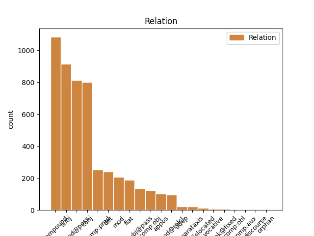
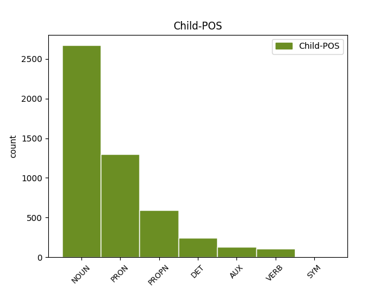

Distribution of features within this leaf



Agreement Rules sorted by frequency.
- When the dependent token is the compound(compound) of the head token, and the head token is NOUN and the dependent token is NOUN.
1 This _ _ _ _ 0 _ _ _
2 was _ _ _ _ 0 _ _ _
3 their _ _ _ _ 0 _ _ _
4 regular _ _ _ _ 0 _ _ _
5 Sunday Sunday NOUN SG-NOM Number=Sing 7 compound _ _
6 visiting _ _ _ _ 0 _ _ _
7 hour hour NOUN SG-NOM Number=Sing 0 _ _ _
8 , _ _ _ _ 0 _ _ _
9 and _ _ _ _ 0 _ _ _
10 having _ _ _ _ 0 _ _ _
11 little _ _ _ _ 0 _ _ _
12 in _ _ _ _ 0 _ _ _
13 common _ _ _ _ 0 _ _ _
14 and _ _ _ _ 0 _ _ _
15 less _ _ _ _ 0 _ _ _
16 to _ _ _ _ 0 _ _ _
17 say _ _ _ _ 0 _ _ _
18 , _ _ _ _ 0 _ _ _
19 they _ _ _ _ 0 _ _ _
20 had _ _ _ _ 0 _ _ _
21 hit _ _ _ _ 0 _ _ _
22 on _ _ _ _ 0 _ _ _
23 the _ _ _ _ 0 _ _ _
24 happy _ _ _ _ 0 _ _ _
25 idea _ _ _ _ 0 _ _ _
26 of _ _ _ _ 0 _ _ _
27 spiritual _ _ _ _ 0 _ _ _
28 elevation _ _ _ _ 0 _ _ _
29 . _ _ _ _ 0 _ _ _
1 As _ _ _ _ 0 _ _ _
2 his he PRON P3SG-GEN Gender=Masc|Number=Sing|Person=3|Poss=Yes|PronType=Prs 3 mod@poss _ _
3 world world NOUN SG-NOM Number=Sing 0 _ _ _
4 darkened _ _ _ _ 0 _ _ _
5 , _ _ _ _ 0 _ _ _
6 the _ _ _ _ 0 _ _ _
7 shadows _ _ _ _ 0 _ _ _
8 in _ _ _ _ 0 _ _ _
9 our _ _ _ _ 0 _ _ _
10 house _ _ _ _ 0 _ _ _
11 increased _ _ _ _ 0 _ _ _
12 . _ _ _ _ 0 _ _ _
1 The _ _ _ _ 0 _ _ _
2 bar _ _ _ _ 0 _ _ _
3 was _ _ _ _ 0 _ _ _
4 a _ _ _ _ 0 _ _ _
5 chessboard _ _ _ _ 0 _ _ _
6 of _ _ _ _ 0 _ _ _
7 couples couple NOUN PL-NOM Number=Plur 0 _ _ _
8 manoeuvring _ _ _ _ 0 _ _ _
9 Martinis _ _ _ _ 0 _ _ _
10 and _ _ _ _ 0 _ _ _
11 waiters waiter NOUN PL-NOM Number=Plur 7 conj _ _
12 high-carrying _ _ _ _ 0 _ _ _
13 chrome _ _ _ _ 0 _ _ _
14 trays _ _ _ _ 0 _ _ _
15 . _ _ _ _ 0 _ _ _
1 When _ _ _ _ 0 _ _ _
2 she _ _ _ _ 0 _ _ _
3 imitated _ _ _ _ 0 _ _ _
4 the _ _ _ _ 0 _ _ _
5 horse _ _ _ _ 0 _ _ _
6 that _ _ _ _ 0 _ _ _
7 crieth _ _ _ _ 0 _ _ _
8 among _ _ _ _ 0 _ _ _
9 the _ _ _ _ 0 _ _ _
10 trumpets _ _ _ _ 0 _ _ _
11 ' _ _ _ _ 0 _ _ _
12 Aha _ _ _ _ 0 _ _ _
13 ! _ _ _ _ 0 _ _ _
14 ' _ _ _ _ 0 _ _ _
15 , _ _ _ _ 0 _ _ _
16 I I PRON PERS-P1SG-NOM Case=Nom|Number=Sing|Person=1|PronType=Prs 17 subj _ _
17 was be AUX PAST Mood=Ind|Number=Sing|Person=1|Tense=Past|VerbForm=Fin 0 _ _ _
18 back _ _ _ _ 0 _ _ _
19 with _ _ _ _ 0 _ _ _
20 Grandmother _ _ _ _ 0 _ _ _
21 again _ _ _ _ 0 _ _ _
22 , _ _ _ _ 0 _ _ _
23 back _ _ _ _ 0 _ _ _
24 with _ _ _ _ 0 _ _ _
25 the _ _ _ _ 0 _ _ _
26 weekly _ _ _ _ 0 _ _ _
27 visits _ _ _ _ 0 _ _ _
28 and _ _ _ _ 0 _ _ _
29 the _ _ _ _ 0 _ _ _
30 preposterous _ _ _ _ 0 _ _ _
31 slippers _ _ _ _ 0 _ _ _
32 , _ _ _ _ 0 _ _ _
33 the _ _ _ _ 0 _ _ _
34 huge _ _ _ _ 0 _ _ _
35 full-length _ _ _ _ 0 _ _ _
36 apron _ _ _ _ 0 _ _ _
37 , _ _ _ _ 0 _ _ _
38 its _ _ _ _ 0 _ _ _
39 pocket _ _ _ _ 0 _ _ _
40 stuffed _ _ _ _ 0 _ _ _
41 with _ _ _ _ 0 _ _ _
42 Polo _ _ _ _ 0 _ _ _
43 mints _ _ _ _ 0 _ _ _
44 and _ _ _ _ 0 _ _ _
45 a _ _ _ _ 0 _ _ _
46 battered _ _ _ _ 0 _ _ _
47 Bible _ _ _ _ 0 _ _ _
48 . _ _ _ _ 0 _ _ _
1 My _ _ _ _ 0 _ _ _
2 grandmother _ _ _ _ 0 _ _ _
3 , _ _ _ _ 0 _ _ _
4 who _ _ _ _ 0 _ _ _
5 was _ _ _ _ 0 _ _ _
6 firmly _ _ _ _ 0 _ _ _
7 convinced _ _ _ _ 0 _ _ _
8 by _ _ _ _ 0 _ _ _
9 the _ _ _ _ 0 _ _ _
10 Word _ _ _ _ 0 _ _ _
11 of _ _ _ _ 0 _ _ _
12 the _ _ _ _ 0 _ _ _
13 Lord _ _ _ _ 0 _ _ _
14 , _ _ _ _ 0 _ _ _
15 took _ _ _ _ 0 _ _ _
16 more _ _ _ _ 0 _ _ _
17 pleasure _ _ _ _ 0 _ _ _
18 in _ _ _ _ 0 _ _ _
19 that that DET DEM-SG Number=Sing|PronType=Dem 20 det _ _
20 hour hour NOUN SG-NOM Number=Sing 0 _ _ _
21 than _ _ _ _ 0 _ _ _
22 in _ _ _ _ 0 _ _ _
23 any _ _ _ _ 0 _ _ _
24 other _ _ _ _ 0 _ _ _
25 of _ _ _ _ 0 _ _ _
26 the _ _ _ _ 0 _ _ _
27 week _ _ _ _ 0 _ _ _
28 , _ _ _ _ 0 _ _ _
29 including _ _ _ _ 0 _ _ _
30 2 _ _ _ _ 0 _ _ _
31 p.m. _ _ _ _ 0 _ _ _
32 Thursday _ _ _ _ 0 _ _ _
33 when _ _ _ _ 0 _ _ _
34 she _ _ _ _ 0 _ _ _
35 drew _ _ _ _ 0 _ _ _
36 her _ _ _ _ 0 _ _ _
37 pension _ _ _ _ 0 _ _ _
38 . _ _ _ _ 0 _ _ _
1 The _ _ _ _ 0 _ _ _
2 bar bar NOUN SG-NOM Number=Sing 3 subj _ _
3 was be AUX PAST Mood=Ind|Number=Sing|Person=1|Tense=Past|VerbForm=Fin 0 _ _ _
4 a _ _ _ _ 0 _ _ _
5 chessboard _ _ _ _ 0 _ _ _
6 of _ _ _ _ 0 _ _ _
7 couples _ _ _ _ 0 _ _ _
8 manoeuvring _ _ _ _ 0 _ _ _
9 Martinis _ _ _ _ 0 _ _ _
10 and _ _ _ _ 0 _ _ _
11 waiters _ _ _ _ 0 _ _ _
12 high-carrying _ _ _ _ 0 _ _ _
13 chrome _ _ _ _ 0 _ _ _
14 trays _ _ _ _ 0 _ _ _
15 . _ _ _ _ 0 _ _ _
1 The _ _ _ _ 0 _ _ _
2 bar _ _ _ _ 0 _ _ _
3 was be AUX PAST Mood=Ind|Number=Sing|Person=1|Tense=Past|VerbForm=Fin 0 _ _ _
4 a _ _ _ _ 0 _ _ _
5 chessboard chessboard NOUN SG-NOM Number=Sing 3 comp:pred _ _
6 of _ _ _ _ 0 _ _ _
7 couples _ _ _ _ 0 _ _ _
8 manoeuvring _ _ _ _ 0 _ _ _
9 Martinis _ _ _ _ 0 _ _ _
10 and _ _ _ _ 0 _ _ _
11 waiters _ _ _ _ 0 _ _ _
12 high-carrying _ _ _ _ 0 _ _ _
13 chrome _ _ _ _ 0 _ _ _
14 trays _ _ _ _ 0 _ _ _
15 . _ _ _ _ 0 _ _ _
1 Mother mother NOUN SG-NOM Number=Sing 2 subj _ _
2 was be VERB PAST Mood=Ind|Number=Sing|Person=1|Tense=Past|VerbForm=Fin 0 _ _ _
3 in _ _ _ _ 0 _ _ _
4 the _ _ _ _ 0 _ _ _
5 bath _ _ _ _ 0 _ _ _
6 , _ _ _ _ 0 _ _ _
7 with _ _ _ _ 0 _ _ _
8 bubbles _ _ _ _ 0 _ _ _
9 up _ _ _ _ 0 _ _ _
10 to _ _ _ _ 0 _ _ _
11 her _ _ _ _ 0 _ _ _
12 neck _ _ _ _ 0 _ _ _
13 , _ _ _ _ 0 _ _ _
14 and _ _ _ _ 0 _ _ _
15 my _ _ _ _ 0 _ _ _
16 grandmother _ _ _ _ 0 _ _ _
17 , _ _ _ _ 0 _ _ _
18 on _ _ _ _ 0 _ _ _
19 the _ _ _ _ 0 _ _ _
20 bath-stool _ _ _ _ 0 _ _ _
21 , _ _ _ _ 0 _ _ _
22 was _ _ _ _ 0 _ _ _
23 reading _ _ _ _ 0 _ _ _
24 out _ _ _ _ 0 _ _ _
25 loud _ _ _ _ 0 _ _ _
26 from _ _ _ _ 0 _ _ _
27 the _ _ _ _ 0 _ _ _
28 Bible _ _ _ _ 0 _ _ _
29 . _ _ _ _ 0 _ _ _
1 ' _ _ _ _ 0 _ _ _
2 No _ _ _ _ 0 _ _ _
3 . _ _ _ _ 0 _ _ _
4 I _ _ _ _ 0 _ _ _
5 live _ _ _ _ 0 _ _ _
6 in _ _ _ _ 0 _ _ _
7 New New PROPN NOM Number=Sing 0 _ _ _
8 York York PROPN SG-NOM Number=Sing 7 flat _ SpaceAfter=No
9 . _ _ _ _ 0 _ _ _
1 There _ _ _ _ 0 _ _ _
2 was be VERB PAST Mood=Ind|Number=Sing|Person=1|Tense=Past|VerbForm=Fin 0 _ _ _
3 nothing nothing PRON NEG-SG Number=Sing 2 subj _ _
4 of _ _ _ _ 0 _ _ _
5 the _ _ _ _ 0 _ _ _
6 whore _ _ _ _ 0 _ _ _
7 about _ _ _ _ 0 _ _ _
8 her _ _ _ _ 0 _ _ _
9 and _ _ _ _ 0 _ _ _
10 this _ _ _ _ 0 _ _ _
11 my _ _ _ _ 0 _ _ _
12 father _ _ _ _ 0 _ _ _
13 liked _ _ _ _ 0 _ _ _
14 . _ _ _ _ 0 _ _ _
1 One _ _ _ _ 0 _ _ _
2 of _ _ _ _ 0 _ _ _
3 the _ _ _ _ 0 _ _ _
4 wolves _ _ _ _ 0 _ _ _
5 licked _ _ _ _ 0 _ _ _
6 his _ _ _ _ 0 _ _ _
7 face _ _ _ _ 0 _ _ _
8 with _ _ _ _ 0 _ _ _
9 its _ _ _ _ 0 _ _ _
10 brown-pink _ _ _ _ 0 _ _ _
11 parma parma PROPN SG-NOM Number=Sing 12 compound _ _
12 ham ham NOUN SG-NOM Number=Sing 0 _ _ _
13 tongue _ _ _ _ 0 _ _ _
14 . _ _ _ _ 0 _ _ _
1 The _ _ _ _ 0 _ _ _
2 sell-out _ _ _ _ 0 _ _ _
3 cruise cruise NOUN SG-NOM Number=Sing 12 subj@pass _ SpaceAfter=No
4 , _ _ _ _ 0 _ _ _
5 itself _ _ _ _ 0 _ _ _
6 something _ _ _ _ 0 _ _ _
7 of _ _ _ _ 0 _ _ _
8 a _ _ _ _ 0 _ _ _
9 foie _ _ _ _ 0 _ _ _
10 gras _ _ _ _ 0 _ _ _
11 , _ _ _ _ 0 _ _ _
12 was be AUX PAST Mood=Ind|Number=Sing|Person=1|Tense=Past|VerbForm=Fin 0 _ _ _
13 packed _ _ _ _ 0 _ _ _
14 with _ _ _ _ 0 _ _ _
15 atheists _ _ _ _ 0 _ _ _
16 looking _ _ _ _ 0 _ _ _
17 for _ _ _ _ 0 _ _ _
18 mystery _ _ _ _ 0 _ _ _
19 . _ _ _ _ 0 _ _ _
1 It _ _ _ _ 0 _ _ _
2 was _ _ _ _ 0 _ _ _
3 Hermes _ _ _ _ 0 _ _ _
4 who _ _ _ _ 0 _ _ _
5 told _ _ _ _ 0 _ _ _
6 him _ _ _ _ 0 _ _ _
7 the _ _ _ _ 0 _ _ _
8 source _ _ _ _ 0 _ _ _
9 of _ _ _ _ 0 _ _ _
10 his _ _ _ _ 0 _ _ _
11 trouble _ _ _ _ 0 _ _ _
12 , _ _ _ _ 0 _ _ _
13 and _ _ _ _ 0 _ _ _
14 Hephaestus _ _ _ _ 0 _ _ _
15 , _ _ _ _ 0 _ _ _
16 the _ _ _ _ 0 _ _ _
17 lame _ _ _ _ 0 _ _ _
18 god _ _ _ _ 0 _ _ _
19 of _ _ _ _ 0 _ _ _
20 the _ _ _ _ 0 _ _ _
21 smithy _ _ _ _ 0 _ _ _
22 who _ _ _ _ 0 _ _ _
23 took _ _ _ _ 0 _ _ _
24 a _ _ _ _ 0 _ _ _
25 hammer _ _ _ _ 0 _ _ _
26 and _ _ _ _ 0 _ _ _
27 wedge _ _ _ _ 0 _ _ _
28 and _ _ _ _ 0 _ _ _
29 split _ _ _ _ 0 _ _ _
30 open _ _ _ _ 0 _ _ _
31 Lord lord NOUN SG-NOM Number=Sing 32 mod _ _
32 Zeus Zeus PROPN SG Number=Sing 0 _ _ _
33 's _ _ _ _ 0 _ _ _
34 skull _ _ _ _ 0 _ _ _
35 . _ _ _ _ 0 _ _ _
1 The _ _ _ _ 0 _ _ _
2 best _ _ _ _ 0 _ _ _
3 there _ _ _ _ 0 _ _ _
4 is _ _ _ _ 0 _ _ _
5 are _ _ _ _ 0 _ _ _
6 days _ _ _ _ 0 _ _ _
7 when _ _ _ _ 0 _ _ _
8 the _ _ _ _ 0 _ _ _
9 jigsaw _ _ _ _ 0 _ _ _
10 assumes assume VERB PRES Mood=Ind|Number=Sing|Person=3|Tense=Pres|VerbForm=Fin 0 _ _ _
11 its _ _ _ _ 0 _ _ _
12 own _ _ _ _ 0 _ _ _
13 meaning meaning NOUN SG-NOM Number=Sing 10 comp:obj _ _
14 and _ _ _ _ 0 _ _ _
15 I _ _ _ _ 0 _ _ _
16 no _ _ _ _ 0 _ _ _
17 longer _ _ _ _ 0 _ _ _
18 care _ _ _ _ 0 _ _ _
19 what _ _ _ _ 0 _ _ _
20 picture _ _ _ _ 0 _ _ _
21 is _ _ _ _ 0 _ _ _
22 emerging _ _ _ _ 0 _ _ _
23 . _ _ _ _ 0 _ _ _
1 Three _ _ _ _ 0 _ _ _
2 pairs _ _ _ _ 0 _ _ _
3 of _ _ _ _ 0 _ _ _
4 two _ _ _ _ 0 _ _ _
5 : _ _ _ _ 0 _ _ _
6 Jove _ _ _ _ 0 _ _ _
7 and _ _ _ _ 0 _ _ _
8 Stella _ _ _ _ 0 _ _ _
9 , _ _ _ _ 0 _ _ _
10 Jove _ _ _ _ 0 _ _ _
11 and _ _ _ _ 0 _ _ _
12 Alice _ _ _ _ 0 _ _ _
13 , _ _ _ _ 0 _ _ _
14 Alice Alice PROPN SG-NOM Number=Sing 0 _ _ _
15 and _ _ _ _ 0 _ _ _
16 Stella Stella PROPN SG-NOM Number=Sing 14 conj _ _
17 and _ _ _ _ 0 _ _ _
18 under _ _ _ _ 0 _ _ _
19 the _ _ _ _ 0 _ _ _
20 surface _ _ _ _ 0 _ _ _
21 of _ _ _ _ 0 _ _ _
22 each _ _ _ _ 0 _ _ _
23 the _ _ _ _ 0 _ _ _
24 head _ _ _ _ 0 _ _ _
25 of _ _ _ _ 0 _ _ _
26 the _ _ _ _ 0 _ _ _
27 other _ _ _ _ 0 _ _ _
28 . _ _ _ _ 0 _ _ _
1 Trident Trident PROPN SG-NOM Number=Sing 7 subj _ _
2 Shipping _ _ _ _ 0 _ _ _
3 , _ _ _ _ 0 _ _ _
4 funded _ _ _ _ 0 _ _ _
5 1809 _ _ _ _ 0 _ _ _
6 , _ _ _ _ 0 _ _ _
7 was be AUX PAST Mood=Ind|Number=Sing|Person=1|Tense=Past|VerbForm=Fin 0 _ _ _
8 slowly _ _ _ _ 0 _ _ _
9 going _ _ _ _ 0 _ _ _
10 bankrupt _ _ _ _ 0 _ _ _
11 and _ _ _ _ 0 _ _ _
12 taking _ _ _ _ 0 _ _ _
13 my _ _ _ _ 0 _ _ _
14 father _ _ _ _ 0 _ _ _
15 with _ _ _ _ 0 _ _ _
16 it _ _ _ _ 0 _ _ _
17 . _ _ _ _ 0 _ _ _
1 His _ _ _ _ 0 _ _ _
2 was _ _ _ _ 0 _ _ _
3 the _ _ _ _ 0 _ _ _
4 night _ _ _ _ 0 _ _ _
5 vessel vessel NOUN SG-NOM Number=Sing 0 _ _ _
6 , _ _ _ _ 0 _ _ _
7 the _ _ _ _ 0 _ _ _
8 vessel vessel NOUN SG-NOM Number=Sing 5 appos _ _
9 on _ _ _ _ 0 _ _ _
10 oily _ _ _ _ 0 _ _ _
11 waters _ _ _ _ 0 _ _ _
12 , _ _ _ _ 0 _ _ _
13 his _ _ _ _ 0 _ _ _
14 was _ _ _ _ 0 _ _ _
15 the _ _ _ _ 0 _ _ _
16 light _ _ _ _ 0 _ _ _
17 shining _ _ _ _ 0 _ _ _
18 in _ _ _ _ 0 _ _ _
19 the _ _ _ _ 0 _ _ _
20 darkness _ _ _ _ 0 _ _ _
21 , _ _ _ _ 0 _ _ _
22 come _ _ _ _ 0 _ _ _
23 home _ _ _ _ 0 _ _ _
24 , _ _ _ _ 0 _ _ _
25 come _ _ _ _ 0 _ _ _
26 home _ _ _ _ 0 _ _ _
27 . _ _ _ _ 0 _ _ _
1 The _ _ _ _ 0 _ _ _
2 name name NOUN SG-NOM Number=Sing 3 compound _ _
3 Malfoy Malfoy PROPN SG-NOM Number=Sing 0 _ _ _
4 still _ _ _ _ 0 _ _ _
5 commands _ _ _ _ 0 _ _ _
6 a _ _ _ _ 0 _ _ _
7 certain _ _ _ _ 0 _ _ _
8 respect _ _ _ _ 0 _ _ _
9 , _ _ _ _ 0 _ _ _
10 yet _ _ _ _ 0 _ _ _
11 the _ _ _ _ 0 _ _ _
12 Ministry _ _ _ _ 0 _ _ _
13 grows _ _ _ _ 0 _ _ _
14 ever _ _ _ _ 0 _ _ _
15 more _ _ _ _ 0 _ _ _
16 meddlesome _ _ _ _ 0 _ _ _
17 . _ _ _ _ 0 _ _ _
1 I _ _ _ _ 0 _ _ _
2 had _ _ _ _ 0 _ _ _
3 to _ _ _ _ 0 _ _ _
4 let _ _ _ _ 0 _ _ _
5 go _ _ _ _ 0 _ _ _
6 of _ _ _ _ 0 _ _ _
7 my _ _ _ _ 0 _ _ _
8 detachment detachment NOUN SG-NOM Number=Sing 0 _ _ _
9 , _ _ _ _ 0 _ _ _
10 my _ _ _ _ 0 _ _ _
11 resentment resentment NOUN SG-NOM Number=Sing 8 mod _ SpaceAfter=No
12 . _ _ _ _ 0 _ _ _
1 There _ _ _ _ 0 _ _ _
2 was be AUX PAST Mood=Ind|Number=Sing|Person=1|Tense=Past|VerbForm=Fin 0 _ _ _
3 nothing nothing PRON NEG-SG Number=Sing 2 subj@pass _ _
4 left _ _ _ _ 0 _ _ _
5 in _ _ _ _ 0 _ _ _
6 the _ _ _ _ 0 _ _ _
7 room _ _ _ _ 0 _ _ _
8 but _ _ _ _ 0 _ _ _
9 she _ _ _ _ 0 _ _ _
10 and _ _ _ _ 0 _ _ _
11 me _ _ _ _ 0 _ _ _
12 , _ _ _ _ 0 _ _ _
13 she _ _ _ _ 0 _ _ _
14 and _ _ _ _ 0 _ _ _
15 me _ _ _ _ 0 _ _ _
16 hypnotised _ _ _ _ 0 _ _ _
17 by _ _ _ _ 0 _ _ _
18 each _ _ _ _ 0 _ _ _
19 other _ _ _ _ 0 _ _ _
20 , _ _ _ _ 0 _ _ _
21 unable _ _ _ _ 0 _ _ _
22 to _ _ _ _ 0 _ _ _
23 speak _ _ _ _ 0 _ _ _
24 because _ _ _ _ 0 _ _ _
25 of _ _ _ _ 0 _ _ _
26 the _ _ _ _ 0 _ _ _
27 wind _ _ _ _ 0 _ _ _
28 . _ _ _ _ 0 _ _ _
1 My _ _ _ _ 0 _ _ _
2 grandmother grandmother NOUN SG-NOM Number=Sing 0 _ _ _
3 , _ _ _ _ 0 _ _ _
4 who _ _ _ _ 0 _ _ _
5 was be AUX PAST Mood=Ind|Number=Sing|Person=1|Tense=Past|VerbForm=Fin 2 mod@relcl _ _
6 firmly _ _ _ _ 0 _ _ _
7 convinced _ _ _ _ 0 _ _ _
8 by _ _ _ _ 0 _ _ _
9 the _ _ _ _ 0 _ _ _
10 Word _ _ _ _ 0 _ _ _
11 of _ _ _ _ 0 _ _ _
12 the _ _ _ _ 0 _ _ _
13 Lord _ _ _ _ 0 _ _ _
14 , _ _ _ _ 0 _ _ _
15 took _ _ _ _ 0 _ _ _
16 more _ _ _ _ 0 _ _ _
17 pleasure _ _ _ _ 0 _ _ _
18 in _ _ _ _ 0 _ _ _
19 that _ _ _ _ 0 _ _ _
20 hour _ _ _ _ 0 _ _ _
21 than _ _ _ _ 0 _ _ _
22 in _ _ _ _ 0 _ _ _
23 any _ _ _ _ 0 _ _ _
24 other _ _ _ _ 0 _ _ _
25 of _ _ _ _ 0 _ _ _
26 the _ _ _ _ 0 _ _ _
27 week _ _ _ _ 0 _ _ _
28 , _ _ _ _ 0 _ _ _
29 including _ _ _ _ 0 _ _ _
30 2 _ _ _ _ 0 _ _ _
31 p.m. _ _ _ _ 0 _ _ _
32 Thursday _ _ _ _ 0 _ _ _
33 when _ _ _ _ 0 _ _ _
34 she _ _ _ _ 0 _ _ _
35 drew _ _ _ _ 0 _ _ _
36 her _ _ _ _ 0 _ _ _
37 pension _ _ _ _ 0 _ _ _
38 . _ _ _ _ 0 _ _ _
1 It _ _ _ _ 0 _ _ _
2 looked _ _ _ _ 0 _ _ _
3 as _ _ _ _ 0 _ _ _
4 though _ _ _ _ 0 _ _ _
5 it _ _ _ _ 0 _ _ _
6 had _ _ _ _ 0 _ _ _
7 once _ _ _ _ 0 _ _ _
8 been _ _ _ _ 0 _ _ _
9 a _ _ _ _ 0 _ _ _
10 large _ _ _ _ 0 _ _ _
11 stone _ _ _ _ 0 _ _ _
12 pigsty _ _ _ _ 0 _ _ _
13 , _ _ _ _ 0 _ _ _
14 but _ _ _ _ 0 _ _ _
15 extra _ _ _ _ 0 _ _ _
16 rooms _ _ _ _ 0 _ _ _
17 had _ _ _ _ 0 _ _ _
18 been _ _ _ _ 0 _ _ _
19 added _ _ _ _ 0 _ _ _
20 here _ _ _ _ 0 _ _ _
21 and _ _ _ _ 0 _ _ _
22 there _ _ _ _ 0 _ _ _
23 until _ _ _ _ 0 _ _ _
24 it _ _ _ _ 0 _ _ _
25 was _ _ _ _ 0 _ _ _
26 several _ _ _ _ 0 _ _ _
27 storeys _ _ _ _ 0 _ _ _
28 high _ _ _ _ 0 _ _ _
29 and _ _ _ _ 0 _ _ _
30 so _ _ _ _ 0 _ _ _
31 crooked _ _ _ _ 0 _ _ _
32 it _ _ _ _ 0 _ _ _
33 looked _ _ _ _ 0 _ _ _
34 as _ _ _ _ 0 _ _ _
35 though _ _ _ _ 0 _ _ _
36 it _ _ _ _ 0 _ _ _
37 was _ _ _ _ 0 _ _ _
38 held _ _ _ _ 0 _ _ _
39 up _ _ _ _ 0 _ _ _
40 by _ _ _ _ 0 _ _ _
41 magic magic NOUN SG-NOM Number=Sing 0 _ _ _
42 ( _ _ _ _ 0 _ _ _
43 which _ _ _ _ 0 _ _ _
44 , _ _ _ _ 0 _ _ _
45 Harry _ _ _ _ 0 _ _ _
46 reminded _ _ _ _ 0 _ _ _
47 himself _ _ _ _ 0 _ _ _
48 , _ _ _ _ 0 _ _ _
49 it _ _ _ _ 0 _ _ _
50 probably _ _ _ _ 0 _ _ _
51 was be VERB PAST Mood=Ind|Number=Sing|Person=1|Tense=Past|VerbForm=Fin 41 mod@relcl _ SpaceAfter=No
52 ) _ _ _ _ 0 _ _ _
53 . _ _ _ _ 0 _ _ _
1 Ron Ron PROPN SG-NOM Number=Sing 3 subj _ _
2 Weasley _ _ _ _ 0 _ _ _
3 was be VERB PAST Mood=Ind|Number=Sing|Person=1|Tense=Past|VerbForm=Fin 0 _ _ _
4 outside _ _ _ _ 0 _ _ _
5 Harry _ _ _ _ 0 _ _ _
6 's _ _ _ _ 0 _ _ _
7 window _ _ _ _ 0 _ _ _
8 . _ _ _ _ 0 _ _ _
1 The _ _ _ _ 0 _ _ _
2 stage _ _ _ _ 0 _ _ _
3 was be AUX PAST Mood=Ind|Number=Sing|Person=1|Tense=Past|VerbForm=Fin 0 _ _ _
4 hers _ _ _ _ 0 _ _ _
5 and _ _ _ _ 0 _ _ _
6 if _ _ _ _ 0 _ _ _
7 she _ _ _ _ 0 _ _ _
8 was _ _ _ _ 0 _ _ _
9 performing _ _ _ _ 0 _ _ _
10 for _ _ _ _ 0 _ _ _
11 anyone _ _ _ _ 0 _ _ _
12 it _ _ _ _ 0 _ _ _
13 was be AUX PAST Mood=Ind|Number=Sing|Person=1|Tense=Past|VerbForm=Fin 3 conj _ _
14 herself _ _ _ _ 0 _ _ _
15 . _ _ _ _ 0 _ _ _
1 My _ _ _ _ 0 _ _ _
2 father _ _ _ _ 0 _ _ _
3 had _ _ _ _ 0 _ _ _
4 heard _ _ _ _ 0 _ _ _
5 that _ _ _ _ 0 _ _ _
6 Cunard _ _ _ _ 0 _ _ _
7 , _ _ _ _ 0 _ _ _
8 the _ _ _ _ 0 _ _ _
9 most _ _ _ _ 0 _ _ _
10 illustrious _ _ _ _ 0 _ _ _
11 and _ _ _ _ 0 _ _ _
12 prestigious _ _ _ _ 0 _ _ _
13 shipping _ _ _ _ 0 _ _ _
14 line _ _ _ _ 0 _ _ _
15 in _ _ _ _ 0 _ _ _
16 the _ _ _ _ 0 _ _ _
17 United _ _ _ _ 0 _ _ _
18 Kingdom _ _ _ _ 0 _ _ _
19 , _ _ _ _ 0 _ _ _
20 was _ _ _ _ 0 _ _ _
21 to _ _ _ _ 0 _ _ _
22 be _ _ _ _ 0 _ _ _
23 bought _ _ _ _ 0 _ _ _
24 up _ _ _ _ 0 _ _ _
25 by _ _ _ _ 0 _ _ _
26 Trafalgar Trafalgar PROPN SG-NOM Number=Sing 0 _ _ _
27 House house NOUN SG-NOM Number=Sing 26 flat _ _
28 Investments _ _ _ _ 0 _ _ _
29 . _ _ _ _ 0 _ _ _
1 On _ _ _ _ 0 _ _ _
2 their _ _ _ _ 0 _ _ _
3 wedding _ _ _ _ 0 _ _ _
4 night night NOUN SG-NOM Number=Sing 0 _ _ _
5 , _ _ _ _ 0 _ _ _
6 at _ _ _ _ 0 _ _ _
7 the _ _ _ _ 0 _ _ _
8 Hotel _ _ _ _ 0 _ _ _
9 Ra-Ra Ra-Ra PROPN SG-NOM Number=Sing 4 mod _ _
10 ( _ _ _ _ 0 _ _ _
11 décor _ _ _ _ 0 _ _ _
12 : _ _ _ _ 0 _ _ _
13 Merseyside-Egypt _ _ _ _ 0 _ _ _
14 ) _ _ _ _ 0 _ _ _
15 , _ _ _ _ 0 _ _ _
16 my _ _ _ _ 0 _ _ _
17 father _ _ _ _ 0 _ _ _
18 took _ _ _ _ 0 _ _ _
19 off _ _ _ _ 0 _ _ _
20 his _ _ _ _ 0 _ _ _
21 pyjamas _ _ _ _ 0 _ _ _
22 so _ _ _ _ 0 _ _ _
23 that _ _ _ _ 0 _ _ _
24 his _ _ _ _ 0 _ _ _
25 wife _ _ _ _ 0 _ _ _
26 could _ _ _ _ 0 _ _ _
27 see _ _ _ _ 0 _ _ _
28 him _ _ _ _ 0 _ _ _
29 man _ _ _ _ 0 _ _ _
30 qua _ _ _ _ 0 _ _ _
31 man _ _ _ _ 0 _ _ _
32 , _ _ _ _ 0 _ _ _
33 then _ _ _ _ 0 _ _ _
34 told _ _ _ _ 0 _ _ _
35 her _ _ _ _ 0 _ _ _
36 that _ _ _ _ 0 _ _ _
37 he _ _ _ _ 0 _ _ _
38 would _ _ _ _ 0 _ _ _
39 not _ _ _ _ 0 _ _ _
40 make _ _ _ _ 0 _ _ _
41 love _ _ _ _ 0 _ _ _
42 to _ _ _ _ 0 _ _ _
43 her _ _ _ _ 0 _ _ _
44 until _ _ _ _ 0 _ _ _
45 he _ _ _ _ 0 _ _ _
46 had _ _ _ _ 0 _ _ _
47 been _ _ _ _ 0 _ _ _
48 made _ _ _ _ 0 _ _ _
49 a _ _ _ _ 0 _ _ _
50 director _ _ _ _ 0 _ _ _
51 of _ _ _ _ 0 _ _ _
52 the _ _ _ _ 0 _ _ _
53 line _ _ _ _ 0 _ _ _
54 . _ _ _ _ 0 _ _ _
1 But _ _ _ _ 0 _ _ _
2 that _ _ _ _ 0 _ _ _
3 was be VERB PAST Mood=Ind|Number=Sing|Person=1|Tense=Past|VerbForm=Fin 0 _ _ _
4 in _ _ _ _ 0 _ _ _
5 the _ _ _ _ 0 _ _ _
6 future _ _ _ _ 0 _ _ _
7 , _ _ _ _ 0 _ _ _
8 and _ _ _ _ 0 _ _ _
9 in _ _ _ _ 0 _ _ _
10 1959 _ _ _ _ 0 _ _ _
11 my _ _ _ _ 0 _ _ _
12 father _ _ _ _ 0 _ _ _
13 was be VERB PAST Mood=Ind|Number=Sing|Person=1|Tense=Past|VerbForm=Fin 3 conj _ _
14 in _ _ _ _ 0 _ _ _
15 the _ _ _ _ 0 _ _ _
16 fullness _ _ _ _ 0 _ _ _
17 of _ _ _ _ 0 _ _ _
18 his _ _ _ _ 0 _ _ _
19 present _ _ _ _ 0 _ _ _
20 , _ _ _ _ 0 _ _ _
21 he _ _ _ _ 0 _ _ _
22 could _ _ _ _ 0 _ _ _
23 do _ _ _ _ 0 _ _ _
24 no _ _ _ _ 0 _ _ _
25 wrong _ _ _ _ 0 _ _ _
26 . _ _ _ _ 0 _ _ _
1 Mother _ _ _ _ 0 _ _ _
2 was be VERB PAST Mood=Ind|Number=Sing|Person=1|Tense=Past|VerbForm=Fin 0 _ _ _
3 in _ _ _ _ 0 _ _ _
4 the _ _ _ _ 0 _ _ _
5 bath _ _ _ _ 0 _ _ _
6 , _ _ _ _ 0 _ _ _
7 with _ _ _ _ 0 _ _ _
8 bubbles _ _ _ _ 0 _ _ _
9 up _ _ _ _ 0 _ _ _
10 to _ _ _ _ 0 _ _ _
11 her _ _ _ _ 0 _ _ _
12 neck _ _ _ _ 0 _ _ _
13 , _ _ _ _ 0 _ _ _
14 and _ _ _ _ 0 _ _ _
15 my _ _ _ _ 0 _ _ _
16 grandmother _ _ _ _ 0 _ _ _
17 , _ _ _ _ 0 _ _ _
18 on _ _ _ _ 0 _ _ _
19 the _ _ _ _ 0 _ _ _
20 bath-stool _ _ _ _ 0 _ _ _
21 , _ _ _ _ 0 _ _ _
22 was be AUX PAST Mood=Ind|Number=Sing|Person=1|Tense=Past|VerbForm=Fin 2 conj _ _
23 reading _ _ _ _ 0 _ _ _
24 out _ _ _ _ 0 _ _ _
25 loud _ _ _ _ 0 _ _ _
26 from _ _ _ _ 0 _ _ _
27 the _ _ _ _ 0 _ _ _
28 Bible _ _ _ _ 0 _ _ _
29 . _ _ _ _ 0 _ _ _
1 It _ _ _ _ 0 _ _ _
2 was _ _ _ _ 0 _ _ _
3 different _ _ _ _ 0 _ _ _
4 when _ _ _ _ 0 _ _ _
5 my _ _ _ _ 0 _ _ _
6 sisters _ _ _ _ 0 _ _ _
7 were _ _ _ _ 0 _ _ _
8 born _ _ _ _ 0 _ _ _
9 but _ _ _ _ 0 _ _ _
10 I _ _ _ _ 0 _ _ _
11 was be AUX PAST Mood=Ind|Number=Sing|Person=1|Tense=Past|VerbForm=Fin 0 _ _ _
12 Athene Athene PROPN SG-NOM Number=Sing 11 comp:pred _ SpaceAfter=No
13 . _ _ _ _ 0 _ _ _
1 My _ _ _ _ 0 _ _ _
2 father _ _ _ _ 0 _ _ _
3 had _ _ _ _ 0 _ _ _
4 heard _ _ _ _ 0 _ _ _
5 that _ _ _ _ 0 _ _ _
6 Cunard Cunard PROPN SG-NOM Number=Sing 20 subj@pass _ SpaceAfter=No
7 , _ _ _ _ 0 _ _ _
8 the _ _ _ _ 0 _ _ _
9 most _ _ _ _ 0 _ _ _
10 illustrious _ _ _ _ 0 _ _ _
11 and _ _ _ _ 0 _ _ _
12 prestigious _ _ _ _ 0 _ _ _
13 shipping _ _ _ _ 0 _ _ _
14 line _ _ _ _ 0 _ _ _
15 in _ _ _ _ 0 _ _ _
16 the _ _ _ _ 0 _ _ _
17 United _ _ _ _ 0 _ _ _
18 Kingdom _ _ _ _ 0 _ _ _
19 , _ _ _ _ 0 _ _ _
20 was be AUX PAST Mood=Ind|Number=Sing|Person=1|Tense=Past|VerbForm=Fin 0 _ _ _
21 to _ _ _ _ 0 _ _ _
22 be _ _ _ _ 0 _ _ _
23 bought _ _ _ _ 0 _ _ _
24 up _ _ _ _ 0 _ _ _
25 by _ _ _ _ 0 _ _ _
26 Trafalgar _ _ _ _ 0 _ _ _
27 House _ _ _ _ 0 _ _ _
28 Investments _ _ _ _ 0 _ _ _
29 . _ _ _ _ 0 _ _ _
1 An _ _ _ _ 0 _ _ _
2 oracle _ _ _ _ 0 _ _ _
3 told _ _ _ _ 0 _ _ _
4 Zeus _ _ _ _ 0 _ _ _
5 that _ _ _ _ 0 _ _ _
6 the _ _ _ _ 0 _ _ _
7 baby _ _ _ _ 0 _ _ _
8 would _ _ _ _ 0 _ _ _
9 be _ _ _ _ 0 _ _ _
10 a _ _ _ _ 0 _ _ _
11 girl _ _ _ _ 0 _ _ _
12 but _ _ _ _ 0 _ _ _
13 that _ _ _ _ 0 _ _ _
14 if _ _ _ _ 0 _ _ _
15 Metis _ _ _ _ 0 _ _ _
16 ever _ _ _ _ 0 _ _ _
17 conceived _ _ _ _ 0 _ _ _
18 again _ _ _ _ 0 _ _ _
19 , _ _ _ _ 0 _ _ _
20 she _ _ _ _ 0 _ _ _
21 would _ _ _ _ 0 _ _ _
22 wear _ _ _ _ 0 _ _ _
23 a _ _ _ _ 0 _ _ _
24 boy _ _ _ _ 0 _ _ _
25 who _ _ _ _ 0 _ _ _
26 would _ _ _ _ 0 _ _ _
27 overthrough _ _ _ _ 0 _ _ _
28 Zeus _ _ _ _ 0 _ _ _
29 , _ _ _ _ 0 _ _ _
30 just _ _ _ _ 0 _ _ _
31 as _ _ _ _ 0 _ _ _
32 Zeus _ _ _ _ 0 _ _ _
33 had _ _ _ _ 0 _ _ _
34 deposed _ _ _ _ 0 _ _ _
35 his _ _ _ _ 0 _ _ _
36 own _ _ _ _ 0 _ _ _
37 father father NOUN SG-NOM Number=Sing 0 _ _ _
38 , _ _ _ _ 0 _ _ _
39 Kronos Kronos PROPN SG-NOM Number=Sing 37 appos _ SpaceAfter=No
40 . _ _ _ _ 0 _ _ _
1 But _ _ _ _ 0 _ _ _
2 if _ _ _ _ 0 _ _ _
3 you _ _ _ _ 0 _ _ _
4 have _ _ _ _ 0 _ _ _
5 to _ _ _ _ 0 _ _ _
6 do _ _ _ _ 0 _ _ _
7 it _ _ _ _ 0 _ _ _
8 by _ _ _ _ 0 _ _ _
9 keeping _ _ _ _ 0 _ _ _
10 that _ _ _ _ 0 _ _ _
11 forty _ _ _ _ 0 _ _ _
12 years _ _ _ _ 0 _ _ _
13 or _ _ _ _ 0 _ _ _
14 whatever _ _ _ _ 0 _ _ _
15 sitting _ _ _ _ 0 _ _ _
16 at _ _ _ _ 0 _ _ _
17 the _ _ _ _ 0 _ _ _
18 table _ _ _ _ 0 _ _ _
19 with _ _ _ _ 0 _ _ _
20 you _ _ _ _ 0 _ _ _
21 and _ _ _ _ 0 _ _ _
22 your _ _ _ _ 0 _ _ _
23 children _ _ _ _ 0 _ _ _
24 ... _ _ _ _ 0 _ _ _
25 ach _ _ _ _ 0 _ _ _
26 , _ _ _ _ 0 _ _ _
27 it _ _ _ _ 0 _ _ _
28 's _ _ _ _ 0 _ _ _
29 not _ _ _ _ 0 _ _ _
30 healthy _ _ _ _ 0 _ _ _
31 , _ _ _ _ 0 _ _ _
32 it _ _ _ _ 0 _ _ _
33 makes make VERB PRES Mood=Ind|Number=Sing|Person=3|Tense=Pres|VerbForm=Fin 0 _ _ _
34 me I PRON PERS-P1SG-ACC Case=Acc|Number=Sing|Person=1|PronType=Prs 33 comp:obj _ _
35 sick _ _ _ _ 0 _ _ _
36 . _ _ _ _ 0 _ _ _
1 The _ _ _ _ 0 _ _ _
2 stage _ _ _ _ 0 _ _ _
3 was _ _ _ _ 0 _ _ _
4 hers _ _ _ _ 0 _ _ _
5 and _ _ _ _ 0 _ _ _
6 if _ _ _ _ 0 _ _ _
7 she _ _ _ _ 0 _ _ _
8 was _ _ _ _ 0 _ _ _
9 performing _ _ _ _ 0 _ _ _
10 for _ _ _ _ 0 _ _ _
11 anyone _ _ _ _ 0 _ _ _
12 it _ _ _ _ 0 _ _ _
13 was be AUX PAST Mood=Ind|Number=Sing|Person=1|Tense=Past|VerbForm=Fin 0 _ _ _
14 herself she PRON RFL-P3SG Case=Acc|Gender=Fem|Number=Sing|Person=3|PronType=Prs|Reflex=Yes 13 comp:pred _ SpaceAfter=No
15 . _ _ _ _ 0 _ _ _
1 But _ _ _ _ 0 _ _ _
2 if _ _ _ _ 0 _ _ _
3 you _ _ _ _ 0 _ _ _
4 have _ _ _ _ 0 _ _ _
5 to _ _ _ _ 0 _ _ _
6 do _ _ _ _ 0 _ _ _
7 it _ _ _ _ 0 _ _ _
8 by _ _ _ _ 0 _ _ _
9 keeping _ _ _ _ 0 _ _ _
10 that _ _ _ _ 0 _ _ _
11 forty _ _ _ _ 0 _ _ _
12 years _ _ _ _ 0 _ _ _
13 or _ _ _ _ 0 _ _ _
14 whatever _ _ _ _ 0 _ _ _
15 sitting _ _ _ _ 0 _ _ _
16 at _ _ _ _ 0 _ _ _
17 the _ _ _ _ 0 _ _ _
18 table _ _ _ _ 0 _ _ _
19 with _ _ _ _ 0 _ _ _
20 you _ _ _ _ 0 _ _ _
21 and _ _ _ _ 0 _ _ _
22 your _ _ _ _ 0 _ _ _
23 children _ _ _ _ 0 _ _ _
24 ... _ _ _ _ 0 _ _ _
25 ach _ _ _ _ 0 _ _ _
26 , _ _ _ _ 0 _ _ _
27 it _ _ _ _ 0 _ _ _
28 's be AUX PRES Mood=Ind|Number=Sing|Person=3|Tense=Pres|VerbForm=Fin 0 _ _ _
29 not _ _ _ _ 0 _ _ _
30 healthy _ _ _ _ 0 _ _ _
31 , _ _ _ _ 0 _ _ _
32 it _ _ _ _ 0 _ _ _
33 makes make VERB PRES Mood=Ind|Number=Sing|Person=3|Tense=Pres|VerbForm=Fin 28 parataxis _ _
34 me _ _ _ _ 0 _ _ _
35 sick _ _ _ _ 0 _ _ _
36 . _ _ _ _ 0 _ _ _
1 The _ _ _ _ 0 _ _ _
2 Algonquin _ _ _ _ 0 _ _ _
3 Hotel _ _ _ _ 0 _ _ _
4 ; _ _ _ _ 0 _ _ _
5 Dorothy _ _ _ _ 0 _ _ _
6 Parker _ _ _ _ 0 _ _ _
7 , _ _ _ _ 0 _ _ _
8 James _ _ _ _ 0 _ _ _
9 Thurber _ _ _ _ 0 _ _ _
10 , _ _ _ _ 0 _ _ _
11 The _ _ _ _ 0 _ _ _
12 New New PROPN NOM Number=Sing 0 _ _ _
13 Yorker _ _ _ _ 0 _ _ _
14 , _ _ _ _ 0 _ _ _
15 my _ _ _ _ 0 _ _ _
16 father father NOUN SG-NOM Number=Sing 12 conj _ _
17 in _ _ _ _ 0 _ _ _
18 1957 _ _ _ _ 0 _ _ _
19 . _ _ _ _ 0 _ _ _
1 Rebecca _ _ _ _ 0 _ _ _
2 's be AUX PRES-AUX Mood=Ind|Number=Sing|Person=3|Tense=Pres|VerbForm=Fin 0 _ _ _
3 been _ _ _ _ 0 _ _ _
4 to _ _ _ _ 0 _ _ _
5 the _ _ _ _ 0 _ _ _
6 Sputnik _ _ _ _ 0 _ _ _
7 and _ _ _ _ 0 _ _ _
8 she _ _ _ _ 0 _ _ _
9 says say VERB PRES Mood=Ind|Number=Sing|Person=3|Tense=Pres|VerbForm=Fin 2 conj _ _
10 it _ _ _ _ 0 _ _ _
11 's _ _ _ _ 0 _ _ _
12 terrific _ _ _ _ 0 _ _ _
13 now _ _ _ _ 0 _ _ _
14 . _ _ _ _ 0 _ _ _
1 While _ _ _ _ 0 _ _ _
2 he _ _ _ _ 0 _ _ _
3 was _ _ _ _ 0 _ _ _
4 writing _ _ _ _ 0 _ _ _
5 on _ _ _ _ 0 _ _ _
6 the _ _ _ _ 0 _ _ _
7 customs _ _ _ _ 0 _ _ _
8 and _ _ _ _ 0 _ _ _
9 immigration _ _ _ _ 0 _ _ _
10 form _ _ _ _ 0 _ _ _
11 , _ _ _ _ 0 _ _ _
12 BRAY Bray PROPN SG-NOM Number=Sing 0 _ _ _
13 , _ _ _ _ 0 _ _ _
14 Evelyn Evelyn PROPN SG-NOM Number=Sing 12 mod _ _
15 James _ _ _ _ 0 _ _ _
16 , _ _ _ _ 0 _ _ _
17 and _ _ _ _ 0 _ _ _
18 the _ _ _ _ 0 _ _ _
19 number _ _ _ _ 0 _ _ _
20 of _ _ _ _ 0 _ _ _
21 his _ _ _ _ 0 _ _ _
22 passport _ _ _ _ 0 _ _ _
23 , _ _ _ _ 0 _ _ _
24 someone _ _ _ _ 0 _ _ _
25 was _ _ _ _ 0 _ _ _
26 reading _ _ _ _ 0 _ _ _
27 his _ _ _ _ 0 _ _ _
28 name _ _ _ _ 0 _ _ _
29 over _ _ _ _ 0 _ _ _
30 his _ _ _ _ 0 _ _ _
31 shoulder _ _ _ _ 0 _ _ _
32 ; _ _ _ _ 0 _ _ _
33 he _ _ _ _ 0 _ _ _
34 flexed _ _ _ _ 0 _ _ _
35 it _ _ _ _ 0 _ _ _
36 awkwardly _ _ _ _ 0 _ _ _
37 , _ _ _ _ 0 _ _ _
38 not _ _ _ _ 0 _ _ _
39 because _ _ _ _ 0 _ _ _
40 he _ _ _ _ 0 _ _ _
41 minded _ _ _ _ 0 _ _ _
42 , _ _ _ _ 0 _ _ _
43 but _ _ _ _ 0 _ _ _
44 in _ _ _ _ 0 _ _ _
45 mild _ _ _ _ 0 _ _ _
46 embarrassment _ _ _ _ 0 _ _ _
47 . _ _ _ _ 0 _ _ _
1 In _ _ _ _ 0 _ _ _
2 1947 _ _ _ _ 0 _ _ _
3 , _ _ _ _ 0 _ _ _
4 certificated _ _ _ _ 0 _ _ _
5 and _ _ _ _ 0 _ _ _
6 handsome _ _ _ _ 0 _ _ _
7 at _ _ _ _ 0 _ _ _
8 eighteen _ _ _ _ 0 _ _ _
9 , _ _ _ _ 0 _ _ _
10 he _ _ _ _ 0 _ _ _
11 was _ _ _ _ 0 _ _ _
12 given _ _ _ _ 0 _ _ _
13 a _ _ _ _ 0 _ _ _
14 lowly _ _ _ _ 0 _ _ _
15 job-with-prospects _ _ _ _ 0 _ _ _
16 at _ _ _ _ 0 _ _ _
17 Trident _ _ _ _ 0 _ _ _
18 Shipping shipping PROPN SG-NOM Number=Sing 0 _ _ _
19 ( _ _ _ _ 0 _ _ _
20 Progress progress NOUN SG-NOM Number=Sing 18 appos _ SpaceAfter=No
21 , _ _ _ _ 0 _ _ _
22 Tradition _ _ _ _ 0 _ _ _
23 , _ _ _ _ 0 _ _ _
24 Integrity _ _ _ _ 0 _ _ _
25 ) _ _ _ _ 0 _ _ _
26 . _ _ _ _ 0 _ _ _
1 They _ _ _ _ 0 _ _ _
2 stopped _ _ _ _ 0 _ _ _
3 somewhere _ _ _ _ 0 _ _ _
4 to _ _ _ _ 0 _ _ _
5 give _ _ _ _ 0 _ _ _
6 a _ _ _ _ 0 _ _ _
7 man _ _ _ _ 0 _ _ _
8 a _ _ _ _ 0 _ _ _
9 lift _ _ _ _ 0 _ _ _
10 ; _ _ _ _ 0 _ _ _
11 he _ _ _ _ 0 _ _ _
12 was be AUX PAST Mood=Ind|Number=Sing|Person=1|Tense=Past|VerbForm=Fin 0 _ _ _
13 caught _ _ _ _ 0 _ _ _
14 in _ _ _ _ 0 _ _ _
15 the _ _ _ _ 0 _ _ _
16 lights _ _ _ _ 0 _ _ _
17 , _ _ _ _ 0 _ _ _
18 hat hat NOUN SG-NOM Number=Sing 12 udep _ _
19 in _ _ _ _ 0 _ _ _
20 hand _ _ _ _ 0 _ _ _
21 ; _ _ _ _ 0 _ _ _
22 only _ _ _ _ 0 _ _ _
23 his _ _ _ _ 0 _ _ _
24 clean _ _ _ _ 0 _ _ _
25 white _ _ _ _ 0 _ _ _
26 shirt _ _ _ _ 0 _ _ _
27 had _ _ _ _ 0 _ _ _
28 shown _ _ _ _ 0 _ _ _
29 on _ _ _ _ 0 _ _ _
30 the _ _ _ _ 0 _ _ _
31 dark _ _ _ _ 0 _ _ _
32 road _ _ _ _ 0 _ _ _
33 . _ _ _ _ 0 _ _ _
1 Bray _ _ _ _ 0 _ _ _
2 , _ _ _ _ 0 _ _ _
3 back _ _ _ _ 0 _ _ _
4 in _ _ _ _ 0 _ _ _
5 this _ _ _ _ 0 _ _ _
6 country _ _ _ _ 0 _ _ _
7 once _ _ _ _ 0 _ _ _
8 more _ _ _ _ 0 _ _ _
9 , _ _ _ _ 0 _ _ _
10 again _ _ _ _ 0 _ _ _
11 aware _ _ _ _ 0 _ _ _
12 of _ _ _ _ 0 _ _ _
13 his _ _ _ _ 0 _ _ _
14 own _ _ _ _ 0 _ _ _
15 height _ _ _ _ 0 _ _ _
16 and _ _ _ _ 0 _ _ _
17 size _ _ _ _ 0 _ _ _
18 and _ _ _ _ 0 _ _ _
19 pinkness _ _ _ _ 0 _ _ _
20 almost _ _ _ _ 0 _ _ _
21 like _ _ _ _ 0 _ _ _
22 some _ _ _ _ 0 _ _ _
23 form _ _ _ _ 0 _ _ _
24 of _ _ _ _ 0 _ _ _
25 aggression aggression NOUN SG-NOM Number=Sing 0 _ _ _
26 he _ _ _ _ 0 _ _ _
27 was be AUX PAST Mood=Ind|Number=Sing|Person=1|Tense=Past|VerbForm=Fin 25 mod _ SpaceAfter=No
28 n't _ _ _ _ 0 _ _ _
29 responsible _ _ _ _ 0 _ _ _
30 for _ _ _ _ 0 _ _ _
31 , _ _ _ _ 0 _ _ _
32 knew _ _ _ _ 0 _ _ _
33 that _ _ _ _ 0 _ _ _
34 the _ _ _ _ 0 _ _ _
35 fellow _ _ _ _ 0 _ _ _
36 was _ _ _ _ 0 _ _ _
37 holding _ _ _ _ 0 _ _ _
38 himself _ _ _ _ 0 _ _ _
39 away _ _ _ _ 0 _ _ _
40 from _ _ _ _ 0 _ _ _
41 contact _ _ _ _ 0 _ _ _
42 with _ _ _ _ 0 _ _ _
43 him _ _ _ _ 0 _ _ _
44 . _ _ _ _ 0 _ _ _
1 This _ _ _ _ 0 _ _ _
2 was _ _ _ _ 0 _ _ _
3 an _ _ _ _ 0 _ _ _
4 endless _ _ _ _ 0 _ _ _
5 source source NOUN SG-NOM Number=Sing 0 _ _ _
6 of _ _ _ _ 0 _ _ _
7 satisfaction _ _ _ _ 0 _ _ _
8 to _ _ _ _ 0 _ _ _
9 my I PRON P1SG-GEN Number=Sing|Person=1|Poss=Yes|PronType=Prs 5 mod _ _
10 grandmother _ _ _ _ 0 _ _ _
11 who _ _ _ _ 0 _ _ _
12 never _ _ _ _ 0 _ _ _
13 lost _ _ _ _ 0 _ _ _
14 her _ _ _ _ 0 _ _ _
15 own _ _ _ _ 0 _ _ _
16 whiff _ _ _ _ 0 _ _ _
17 of _ _ _ _ 0 _ _ _
18 elbow _ _ _ _ 0 _ _ _
19 grease _ _ _ _ 0 _ _ _
20 but _ _ _ _ 0 _ _ _
21 delighted _ _ _ _ 0 _ _ _
22 in _ _ _ _ 0 _ _ _
23 the _ _ _ _ 0 _ _ _
24 sweet _ _ _ _ 0 _ _ _
25 smell _ _ _ _ 0 _ _ _
26 of _ _ _ _ 0 _ _ _
27 success _ _ _ _ 0 _ _ _
28 . _ _ _ _ 0 _ _ _
1 The _ _ _ _ 0 _ _ _
2 final _ _ _ _ 0 _ _ _
3 paper _ _ _ _ 0 _ _ _
4 was _ _ _ _ 0 _ _ _
5 passed _ _ _ _ 0 _ _ _
6 off _ _ _ _ 0 _ _ _
7 to _ _ _ _ 0 _ _ _
8 the _ _ _ _ 0 _ _ _
9 outside _ _ _ _ 0 _ _ _
10 world _ _ _ _ 0 _ _ _
11 as _ _ _ _ 0 _ _ _
12 the _ _ _ _ 0 _ _ _
13 work _ _ _ _ 0 _ _ _
14 of _ _ _ _ 0 _ _ _
15 Zakaria _ _ _ _ 0 _ _ _
16 Mohieddin _ _ _ _ 0 _ _ _
17 , _ _ _ _ 0 _ _ _
18 Nasser _ _ _ _ 0 _ _ _
19 's _ _ _ _ 0 _ _ _
20 most _ _ _ _ 0 _ _ _
21 thoughtful _ _ _ _ 0 _ _ _
22 ( _ _ _ _ 0 _ _ _
23 in _ _ _ _ 0 _ _ _
24 Western _ _ _ _ 0 _ _ _
25 eyes _ _ _ _ 0 _ _ _
26 ) _ _ _ _ 0 _ _ _
27 , _ _ _ _ 0 _ _ _
28 reasonable _ _ _ _ 0 _ _ _
29 deputy _ _ _ _ 0 _ _ _
30 , _ _ _ _ 0 _ _ _
31 and _ _ _ _ 0 _ _ _
32 accepted _ _ _ _ 0 _ _ _
33 at _ _ _ _ 0 _ _ _
34 face _ _ _ _ 0 _ _ _
35 value _ _ _ _ 0 _ _ _
36 by _ _ _ _ 0 _ _ _
37 intelligence _ _ _ _ 0 _ _ _
38 analysts _ _ _ _ 0 _ _ _
39 of _ _ _ _ 0 _ _ _
40 the _ _ _ _ 0 _ _ _
41 State _ _ _ _ 0 _ _ _
42 Department department NOUN SG-NOM Number=Sing 0 _ _ _
43 , _ _ _ _ 0 _ _ _
44 the _ _ _ _ 0 _ _ _
45 C.I.A. C.i.a. PROPN SG-NOM Number=Sing 42 conj _ _
46 and _ _ _ _ 0 _ _ _
47 , _ _ _ _ 0 _ _ _
48 presumably _ _ _ _ 0 _ _ _
49 , _ _ _ _ 0 _ _ _
50 similar _ _ _ _ 0 _ _ _
51 agencies _ _ _ _ 0 _ _ _
52 of _ _ _ _ 0 _ _ _
53 other _ _ _ _ 0 _ _ _
54 governments _ _ _ _ 0 _ _ _
55 . _ _ _ _ 0 _ _ _
56 " _ _ _ _ 0 _ _ _
1 Even _ _ _ _ 0 _ _ _
2 worse _ _ _ _ 0 _ _ _
3 , _ _ _ _ 0 _ _ _
4 the _ _ _ _ 0 _ _ _
5 dark _ _ _ _ 0 _ _ _
6 , _ _ _ _ 0 _ _ _
7 narrow _ _ _ _ 0 _ _ _
8 street _ _ _ _ 0 _ _ _
9 Harry _ _ _ _ 0 _ _ _
10 could _ _ _ _ 0 _ _ _
11 see _ _ _ _ 0 _ _ _
12 through _ _ _ _ 0 _ _ _
13 the _ _ _ _ 0 _ _ _
14 dusty _ _ _ _ 0 _ _ _
15 shop _ _ _ _ 0 _ _ _
16 window _ _ _ _ 0 _ _ _
17 was be AUX PAST Mood=Ind|Number=Sing|Person=1|Tense=Past|VerbForm=Fin 20 flat _ _
18 definitely _ _ _ _ 0 _ _ _
19 not _ _ _ _ 0 _ _ _
20 Diagon Diagon PROPN SG-NOM Number=Sing 0 _ _ _
21 Alley _ _ _ _ 0 _ _ _
22 . _ _ _ _ 0 _ _ _
1 At _ _ _ _ 0 _ _ _
2 the _ _ _ _ 0 _ _ _
3 very _ _ _ _ 0 _ _ _
4 end _ _ _ _ 0 _ _ _
5 of _ _ _ _ 0 _ _ _
6 last _ _ _ _ 0 _ _ _
7 term _ _ _ _ 0 _ _ _
8 , _ _ _ _ 0 _ _ _
9 Harry _ _ _ _ 0 _ _ _
10 had _ _ _ _ 0 _ _ _
11 come _ _ _ _ 0 _ _ _
12 face _ _ _ _ 0 _ _ _
13 to _ _ _ _ 0 _ _ _
14 face _ _ _ _ 0 _ _ _
15 with _ _ _ _ 0 _ _ _
16 none _ _ _ _ 0 _ _ _
17 other _ _ _ _ 0 _ _ _
18 than _ _ _ _ 0 _ _ _
19 Lord _ _ _ _ 0 _ _ _
20 Voldemort Voldemort PROPN SG-NOM Number=Sing 0 _ _ _
21 himself he PRON RFL-P3SG Case=Acc|Gender=Masc|Number=Sing|Person=3|PronType=Prs|Reflex=Yes 20 mod _ SpaceAfter=No
22 . _ _ _ _ 0 _ _ _
1 The _ _ _ _ 0 _ _ _
2 sell-out _ _ _ _ 0 _ _ _
3 cruise _ _ _ _ 0 _ _ _
4 , _ _ _ _ 0 _ _ _
5 itself it PRON RFL-P3SG Case=Acc|Gender=Fem|Number=Sing|Person=3|PronType=Prs|Reflex=Yes 6 mod _ _
6 something something PRON IND-SG-NOM Number=Sing 0 _ _ _
7 of _ _ _ _ 0 _ _ _
8 a _ _ _ _ 0 _ _ _
9 foie _ _ _ _ 0 _ _ _
10 gras _ _ _ _ 0 _ _ _
11 , _ _ _ _ 0 _ _ _
12 was _ _ _ _ 0 _ _ _
13 packed _ _ _ _ 0 _ _ _
14 with _ _ _ _ 0 _ _ _
15 atheists _ _ _ _ 0 _ _ _
16 looking _ _ _ _ 0 _ _ _
17 for _ _ _ _ 0 _ _ _
18 mystery _ _ _ _ 0 _ _ _
19 . _ _ _ _ 0 _ _ _
1 Yet _ _ _ _ 0 _ _ _
2 there _ _ _ _ 0 _ _ _
3 was be VERB PAST Mood=Ind|Number=Sing|Person=1|Tense=Past|VerbForm=Fin 0 _ _ _
4 relief relief NOUN SG-NOM Number=Sing 3 comp:pred _ _
5 for _ _ _ _ 0 _ _ _
6 us _ _ _ _ 0 _ _ _
7 to _ _ _ _ 0 _ _ _
8 find _ _ _ _ 0 _ _ _
9 a _ _ _ _ 0 _ _ _
10 human _ _ _ _ 0 _ _ _
11 face _ _ _ _ 0 _ _ _
12 behind _ _ _ _ 0 _ _ _
13 the _ _ _ _ 0 _ _ _
14 monster _ _ _ _ 0 _ _ _
15 mask _ _ _ _ 0 _ _ _
16 ; _ _ _ _ 0 _ _ _
17 the _ _ _ _ 0 _ _ _
18 monster _ _ _ _ 0 _ _ _
19 wife _ _ _ _ 0 _ _ _
20 , _ _ _ _ 0 _ _ _
21 the _ _ _ _ 0 _ _ _
22 monster _ _ _ _ 0 _ _ _
23 mistress _ _ _ _ 0 _ _ _
24 , _ _ _ _ 0 _ _ _
25 and _ _ _ _ 0 _ _ _
26 what _ _ _ _ 0 _ _ _
27 about _ _ _ _ 0 _ _ _
28 the _ _ _ _ 0 _ _ _
29 monster _ _ _ _ 0 _ _ _
30 man _ _ _ _ 0 _ _ _
31 ? _ _ _ _ 0 _ _ _
1 Very _ _ _ _ 0 _ _ _
2 often _ _ _ _ 0 _ _ _
3 she _ _ _ _ 0 _ _ _
4 said _ _ _ _ 0 _ _ _
5 , _ _ _ _ 0 _ _ _
6 ' _ _ _ _ 0 _ _ _
7 The _ _ _ _ 0 _ _ _
8 horse _ _ _ _ 0 _ _ _
9 that _ _ _ _ 0 _ _ _
10 crieth _ _ _ _ 0 _ _ _
11 among _ _ _ _ 0 _ _ _
12 the _ _ _ _ 0 _ _ _
13 trumpets _ _ _ _ 0 _ _ _
14 Aha _ _ _ _ 0 _ _ _
15 ! _ _ _ _ 0 _ _ _
16 ' _ _ _ _ 0 _ _ _
17 and _ _ _ _ 0 _ _ _
18 I _ _ _ _ 0 _ _ _
19 wondered _ _ _ _ 0 _ _ _
20 what _ _ _ _ 0 _ _ _
21 kind kind NOUN SG-NOM Number=Sing 26 dislocated _ _
22 of _ _ _ _ 0 _ _ _
23 a _ _ _ _ 0 _ _ _
24 horse _ _ _ _ 0 _ _ _
25 it _ _ _ _ 0 _ _ _
26 was be AUX PAST Mood=Ind|Number=Sing|Person=1|Tense=Past|VerbForm=Fin 0 _ _ _
27 that _ _ _ _ 0 _ _ _
28 would _ _ _ _ 0 _ _ _
29 do _ _ _ _ 0 _ _ _
30 that _ _ _ _ 0 _ _ _
31 . _ _ _ _ 0 _ _ _
1 You _ _ _ _ 0 _ _ _
2 know _ _ _ _ 0 _ _ _
3 yourself _ _ _ _ 0 _ _ _
4 that _ _ _ _ 0 _ _ _
5 the _ _ _ _ 0 _ _ _
6 agreement _ _ _ _ 0 _ _ _
7 with _ _ _ _ 0 _ _ _
8 South South PROPN SG-NOM Number=Sing 0 _ _ _
9 Africa Africa PROPN SG-NOM Number=Sing 8 unk@fixed _ _
10 was _ _ _ _ 0 _ _ _
11 held _ _ _ _ 0 _ _ _
12 up _ _ _ _ 0 _ _ _
13 because _ _ _ _ 0 _ _ _
14 of _ _ _ _ 0 _ _ _
15 the _ _ _ _ 0 _ _ _
16 fisheries _ _ _ _ 0 _ _ _
17 question _ _ _ _ 0 _ _ _
18 , _ _ _ _ 0 _ _ _
19 too _ _ _ _ 0 _ _ _
20 . _ _ _ _ 0 _ _ _
1 There _ _ _ _ 0 _ _ _
2 was _ _ _ _ 0 _ _ _
3 nothing _ _ _ _ 0 _ _ _
4 left _ _ _ _ 0 _ _ _
5 in _ _ _ _ 0 _ _ _
6 the _ _ _ _ 0 _ _ _
7 room _ _ _ _ 0 _ _ _
8 but _ _ _ _ 0 _ _ _
9 she _ _ _ _ 0 _ _ _
10 and _ _ _ _ 0 _ _ _
11 me _ _ _ _ 0 _ _ _
12 , _ _ _ _ 0 _ _ _
13 she she PRON PERS-SG-NOM Case=Nom|Gender=Fem|Number=Sing|Person=3|PronType=Prs 0 _ _ _
14 and _ _ _ _ 0 _ _ _
15 me I PRON PERS-P1SG-ACC Case=Acc|Number=Sing|Person=1|PronType=Prs 13 conj _ _
16 hypnotised _ _ _ _ 0 _ _ _
17 by _ _ _ _ 0 _ _ _
18 each _ _ _ _ 0 _ _ _
19 other _ _ _ _ 0 _ _ _
20 , _ _ _ _ 0 _ _ _
21 unable _ _ _ _ 0 _ _ _
22 to _ _ _ _ 0 _ _ _
23 speak _ _ _ _ 0 _ _ _
24 because _ _ _ _ 0 _ _ _
25 of _ _ _ _ 0 _ _ _
26 the _ _ _ _ 0 _ _ _
27 wind _ _ _ _ 0 _ _ _
28 . _ _ _ _ 0 _ _ _
1 What _ _ _ _ 0 _ _ _
2 is be AUX PRES-AUX Mood=Ind|Number=Sing|Person=3|Tense=Pres|VerbForm=Fin 15 subj _ _
3 most _ _ _ _ 0 _ _ _
4 needed _ _ _ _ 0 _ _ _
5 in _ _ _ _ 0 _ _ _
6 this _ _ _ _ 0 _ _ _
7 , _ _ _ _ 0 _ _ _
8 as _ _ _ _ 0 _ _ _
9 well _ _ _ _ 0 _ _ _
10 as _ _ _ _ 0 _ _ _
11 in _ _ _ _ 0 _ _ _
12 other _ _ _ _ 0 _ _ _
13 areas _ _ _ _ 0 _ _ _
14 , _ _ _ _ 0 _ _ _
15 is be AUX PRES Mood=Ind|Number=Sing|Person=3|Tense=Pres|VerbForm=Fin 0 _ _ _
16 a _ _ _ _ 0 _ _ _
17 serious _ _ _ _ 0 _ _ _
18 in _ _ _ _ 0 _ _ _
19 depth _ _ _ _ 0 _ _ _
20 analysis _ _ _ _ 0 _ _ _
21 of _ _ _ _ 0 _ _ _
22 the _ _ _ _ 0 _ _ _
23 problems _ _ _ _ 0 _ _ _
24 . _ _ _ _ 0 _ _ _
1 The _ _ _ _ 0 _ _ _
2 sell-out _ _ _ _ 0 _ _ _
3 cruise cruise NOUN SG-NOM Number=Sing 0 _ _ _
4 , _ _ _ _ 0 _ _ _
5 itself _ _ _ _ 0 _ _ _
6 something something PRON IND-SG-NOM Number=Sing 3 appos _ _
7 of _ _ _ _ 0 _ _ _
8 a _ _ _ _ 0 _ _ _
9 foie _ _ _ _ 0 _ _ _
10 gras _ _ _ _ 0 _ _ _
11 , _ _ _ _ 0 _ _ _
12 was _ _ _ _ 0 _ _ _
13 packed _ _ _ _ 0 _ _ _
14 with _ _ _ _ 0 _ _ _
15 atheists _ _ _ _ 0 _ _ _
16 looking _ _ _ _ 0 _ _ _
17 for _ _ _ _ 0 _ _ _
18 mystery _ _ _ _ 0 _ _ _
19 . _ _ _ _ 0 _ _ _
1 Harry _ _ _ _ 0 _ _ _
2 had _ _ _ _ 0 _ _ _
3 n't _ _ _ _ 0 _ _ _
4 told _ _ _ _ 0 _ _ _
5 the _ _ _ _ 0 _ _ _
6 Dursleys _ _ _ _ 0 _ _ _
7 this _ _ _ _ 0 _ _ _
8 ; _ _ _ _ 0 _ _ _
9 he _ _ _ _ 0 _ _ _
10 knew _ _ _ _ 0 _ _ _
11 it _ _ _ _ 0 _ _ _
12 was be VERB PAST Mood=Ind|Number=Sing|Person=1|Tense=Past|VerbForm=Fin 0 _ _ _
13 only _ _ _ _ 0 _ _ _
14 their _ _ _ _ 0 _ _ _
15 terror terror NOUN SG-NOM Number=Sing 12 dislocated _ _
16 that _ _ _ _ 0 _ _ _
17 he _ _ _ _ 0 _ _ _
18 might _ _ _ _ 0 _ _ _
19 turn _ _ _ _ 0 _ _ _
20 them _ _ _ _ 0 _ _ _
21 all _ _ _ _ 0 _ _ _
22 into _ _ _ _ 0 _ _ _
23 dung _ _ _ _ 0 _ _ _
24 beetles _ _ _ _ 0 _ _ _
25 that _ _ _ _ 0 _ _ _
26 stopped _ _ _ _ 0 _ _ _
27 them _ _ _ _ 0 _ _ _
28 locking _ _ _ _ 0 _ _ _
29 him _ _ _ _ 0 _ _ _
30 in _ _ _ _ 0 _ _ _
31 the _ _ _ _ 0 _ _ _
32 cupboard _ _ _ _ 0 _ _ _
33 under _ _ _ _ 0 _ _ _
34 the _ _ _ _ 0 _ _ _
35 stairs _ _ _ _ 0 _ _ _
36 with _ _ _ _ 0 _ _ _
37 his _ _ _ _ 0 _ _ _
38 wand _ _ _ _ 0 _ _ _
39 and _ _ _ _ 0 _ _ _
40 broomstick _ _ _ _ 0 _ _ _
41 . _ _ _ _ 0 _ _ _
1 but _ _ _ _ 0 _ _ _
2 his _ _ _ _ 0 _ _ _
3 wife _ _ _ _ 0 _ _ _
4 was be AUX PAST Mood=Ind|Number=Sing|Person=1|Tense=Past|VerbForm=Fin 0 _ _ _
5 talking _ _ _ _ 0 _ _ _
6 to _ _ _ _ 0 _ _ _
7 Jo-Ann Jo-Ann PROPN SG-NOM Number=Sing 4 udep _ _
8 Pettigrew _ _ _ _ 0 _ _ _
9 , _ _ _ _ 0 _ _ _
10 who _ _ _ _ 0 _ _ _
11 offered _ _ _ _ 0 _ _ _
12 blobs _ _ _ _ 0 _ _ _
13 of _ _ _ _ 0 _ _ _
14 toasted _ _ _ _ 0 _ _ _
15 marshmallow _ _ _ _ 0 _ _ _
16 on _ _ _ _ 0 _ _ _
17 the _ _ _ _ 0 _ _ _
18 end _ _ _ _ 0 _ _ _
19 of _ _ _ _ 0 _ _ _
20 a _ _ _ _ 0 _ _ _
21 long _ _ _ _ 0 _ _ _
22 fork _ _ _ _ 0 _ _ _
23 . _ _ _ _ 0 _ _ _
1 He _ _ _ _ 0 _ _ _
2 attended _ _ _ _ 0 _ _ _
3 most _ _ _ _ 0 _ _ _
4 of _ _ _ _ 0 _ _ _
5 the _ _ _ _ 0 _ _ _
6 official _ _ _ _ 0 _ _ _
7 occasions _ _ _ _ 0 _ _ _
8 ( _ _ _ _ 0 _ _ _
9 he he PRON PERS-P3SG-NOM Case=Nom|Gender=Masc|Number=Sing|Person=3|PronType=Prs 0 _ _ _
10 and _ _ _ _ 0 _ _ _
11 Roly Roly PROPN SG-NOM Number=Sing 9 conj _ _
12 saluted _ _ _ _ 0 _ _ _
13 each _ _ _ _ 0 _ _ _
14 other _ _ _ _ 0 _ _ _
15 with _ _ _ _ 0 _ _ _
16 mock _ _ _ _ 0 _ _ _
17 surprise _ _ _ _ 0 _ _ _
18 when _ _ _ _ 0 _ _ _
19 they _ _ _ _ 0 _ _ _
20 met _ _ _ _ 0 _ _ _
21 in _ _ _ _ 0 _ _ _
22 the _ _ _ _ 0 _ _ _
23 house _ _ _ _ 0 _ _ _
24 , _ _ _ _ 0 _ _ _
25 half-dressed _ _ _ _ 0 _ _ _
26 in _ _ _ _ 0 _ _ _
27 formal _ _ _ _ 0 _ _ _
28 dinner _ _ _ _ 0 _ _ _
29 clothes _ _ _ _ 0 _ _ _
30 every _ _ _ _ 0 _ _ _
31 night _ _ _ _ 0 _ _ _
32 ) _ _ _ _ 0 _ _ _
33 but _ _ _ _ 0 _ _ _
34 the _ _ _ _ 0 _ _ _
35 real _ _ _ _ 0 _ _ _
36 parties _ _ _ _ 0 _ _ _
37 took _ _ _ _ 0 _ _ _
38 place _ _ _ _ 0 _ _ _
39 before _ _ _ _ 0 _ _ _
40 and _ _ _ _ 0 _ _ _
41 after _ _ _ _ 0 _ _ _
42 . _ _ _ _ 0 _ _ _
1 A _ _ _ _ 0 _ _ _
2 genteel _ _ _ _ 0 _ _ _
3 lot _ _ _ _ 0 _ _ _
4 , _ _ _ _ 0 _ _ _
5 very _ _ _ _ 0 _ _ _
6 conscious _ _ _ _ 0 _ _ _
7 of _ _ _ _ 0 _ _ _
8 their _ _ _ _ 0 _ _ _
9 dignity _ _ _ _ 0 _ _ _
10 , _ _ _ _ 0 _ _ _
11 man-about-town man-about-town NOUN SG-NOM Number=Sing 0 _ _ _
12 and _ _ _ _ 0 _ _ _
13 all _ _ _ _ 0 _ _ _
14 that that PRON DEM-SG Number=Sing|PronType=Dem 11 conj _ SpaceAfter=No
15 , _ _ _ _ 0 _ _ _
16 you _ _ _ _ 0 _ _ _
17 can _ _ _ _ 0 _ _ _
18 imagine _ _ _ _ 0 _ _ _
19 how _ _ _ _ 0 _ _ _
20 the _ _ _ _ 0 _ _ _
21 white _ _ _ _ 0 _ _ _
22 toughies _ _ _ _ 0 _ _ _
23 feel _ _ _ _ 0 _ _ _
24 about _ _ _ _ 0 _ _ _
25 all _ _ _ _ 0 _ _ _
26 those _ _ _ _ 0 _ _ _
27 white _ _ _ _ 0 _ _ _
28 collars _ _ _ _ 0 _ _ _
29 round _ _ _ _ 0 _ _ _
30 black _ _ _ _ 0 _ _ _
31 necks _ _ _ _ 0 _ _ _
32 in _ _ _ _ 0 _ _ _
33 the _ _ _ _ 0 _ _ _
34 bar _ _ _ _ 0 _ _ _
35 . _ _ _ _ 0 _ _ _
1 ' _ _ _ _ 0 _ _ _
2 There _ _ _ _ 0 _ _ _
3 's be VERB PRES Mood=Ind|Number=Sing|Person=3|Tense=Pres|VerbForm=Fin 0 _ _ _
4 no _ _ _ _ 0 _ _ _
5 sea _ _ _ _ 0 _ _ _
6 there _ _ _ _ 0 _ _ _
7 is be VERB PRES Mood=Ind|Number=Sing|Person=3|Tense=Pres|VerbForm=Fin 3 parataxis _ _
8 there _ _ _ _ 0 _ _ _
9 ? _ _ _ _ 0 _ _ _
10 ' _ _ _ _ 0 _ _ _
1 Car _ _ _ _ 0 _ _ _
2 gone _ _ _ _ 0 _ _ _
3 could _ _ _ _ 0 _ _ _
4 have _ _ _ _ 0 _ _ _
5 crashed _ _ _ _ 0 _ _ _
6 out _ _ _ _ 0 _ _ _
7 of _ _ _ _ 0 _ _ _
8 my _ _ _ _ 0 _ _ _
9 mind _ _ _ _ 0 _ _ _
10 with _ _ _ _ 0 _ _ _
11 worry _ _ _ _ 0 _ _ _
12 did _ _ _ _ 0 _ _ _
13 you _ _ _ _ 0 _ _ _
14 care _ _ _ _ 0 _ _ _
15 ? _ _ _ _ 0 _ _ _
16 never _ _ _ _ 0 _ _ _
17 , _ _ _ _ 0 _ _ _
18 as _ _ _ _ 0 _ _ _
19 long _ _ _ _ 0 _ _ _
20 as _ _ _ _ 0 _ _ _
21 I _ _ _ _ 0 _ _ _
22 've _ _ _ _ 0 _ _ _
23 lived _ _ _ _ 0 _ _ _
24 you _ _ _ _ 0 _ _ _
25 wait _ _ _ _ 0 _ _ _
26 until _ _ _ _ 0 _ _ _
27 your _ _ _ _ 0 _ _ _
28 father _ _ _ _ 0 _ _ _
29 gets get VERB PRES Mood=Ind|Number=Sing|Person=3|Tense=Pres|VerbForm=Fin 0 _ _ _
30 home home NOUN SG-NOM Number=Sing 29 udep _ SpaceAfter=No
31 , _ _ _ _ 0 _ _ _
32 we _ _ _ _ 0 _ _ _
33 never _ _ _ _ 0 _ _ _
34 had _ _ _ _ 0 _ _ _
35 trouble _ _ _ _ 0 _ _ _
36 like _ _ _ _ 0 _ _ _
37 this _ _ _ _ 0 _ _ _
38 from _ _ _ _ 0 _ _ _
39 Bill _ _ _ _ 0 _ _ _
40 or _ _ _ _ 0 _ _ _
41 Charlie _ _ _ _ 0 _ _ _
42 or _ _ _ _ 0 _ _ _
43 Percy _ _ _ _ 0 _ _ _
1 Husband husband NOUN SG-NOM Number=Sing 0 _ _ _
2 and _ _ _ _ 0 _ _ _
3 wife _ _ _ _ 0 _ _ _
4 . _ _ _ _ 0 _ _ _
5 Man man NOUN SG-NOM Number=Sing 1 parataxis _ _
6 and _ _ _ _ 0 _ _ _
7 rib _ _ _ _ 0 _ _ _
8 . _ _ _ _ 0 _ _ _
9 What _ _ _ _ 0 _ _ _
10 could _ _ _ _ 0 _ _ _
11 be _ _ _ _ 0 _ _ _
12 more _ _ _ _ 0 _ _ _
13 normal _ _ _ _ 0 _ _ _
14 than _ _ _ _ 0 _ _ _
15 that _ _ _ _ 0 _ _ _
16 ? _ _ _ _ 0 _ _ _
1 Across _ _ _ _ 0 _ _ _
2 the _ _ _ _ 0 _ _ _
3 room _ _ _ _ 0 _ _ _
4 was _ _ _ _ 0 _ _ _
5 a _ _ _ _ 0 _ _ _
6 Snow _ _ _ _ 0 _ _ _
7 Queen _ _ _ _ 0 _ _ _
8 's _ _ _ _ 0 _ _ _
9 mirror _ _ _ _ 0 _ _ _
10 , _ _ _ _ 0 _ _ _
11 its _ _ _ _ 0 _ _ _
12 pieces piece NOUN PL-NOM Number=Plur 13 subj _ _
13 scatters scatter NOUN PL-NOM Number=Plur 0 _ _ _
14 of _ _ _ _ 0 _ _ _
15 despair _ _ _ _ 0 _ _ _
16 . _ _ _ _ 0 _ _ _
1 Shahar _ _ _ _ 0 _ _ _
2 leads _ _ _ _ 0 _ _ _
3 me _ _ _ _ 0 _ _ _
4 down _ _ _ _ 0 _ _ _
5 from _ _ _ _ 0 _ _ _
6 the _ _ _ _ 0 _ _ _
7 Mishkenot _ _ _ _ 0 _ _ _
8 Sha'ananim _ _ _ _ 0 _ _ _
9 , _ _ _ _ 0 _ _ _
10 which _ _ _ _ 0 _ _ _
11 stands _ _ _ _ 0 _ _ _
12 on _ _ _ _ 0 _ _ _
13 a _ _ _ _ 0 _ _ _
14 slope _ _ _ _ 0 _ _ _
15 and _ _ _ _ 0 _ _ _
16 faces face VERB PRES Mood=Ind|Number=Sing|Person=3|Tense=Pres|VerbForm=Fin 0 _ _ _
17 Mount Mount PROPN SG-NOM Number=Sing 16 comp:obj _ _
18 Zion _ _ _ _ 0 _ _ _
19 and _ _ _ _ 0 _ _ _
20 the _ _ _ _ 0 _ _ _
21 Old _ _ _ _ 0 _ _ _
22 City _ _ _ _ 0 _ _ _
23 , _ _ _ _ 0 _ _ _
24 to _ _ _ _ 0 _ _ _
25 the _ _ _ _ 0 _ _ _
26 Gai-Hinnom _ _ _ _ 0 _ _ _
27 ( _ _ _ _ 0 _ _ _
28 Gehenna _ _ _ _ 0 _ _ _
29 of _ _ _ _ 0 _ _ _
30 tradition _ _ _ _ 0 _ _ _
31 ) _ _ _ _ 0 _ _ _
32 , _ _ _ _ 0 _ _ _
33 where _ _ _ _ 0 _ _ _
34 worshipers _ _ _ _ 0 _ _ _
35 of _ _ _ _ 0 _ _ _
36 Moloch _ _ _ _ 0 _ _ _
37 once _ _ _ _ 0 _ _ _
38 sacrificed _ _ _ _ 0 _ _ _
39 their _ _ _ _ 0 _ _ _
40 children _ _ _ _ 0 _ _ _
41 . _ _ _ _ 0 _ _ _
1 Everybody _ _ _ _ 0 _ _ _
2 has _ _ _ _ 0 _ _ _
3 some _ _ _ _ 0 _ _ _
4 con _ _ _ _ 0 _ _ _
5 going _ _ _ _ 0 _ _ _
6 , _ _ _ _ 0 _ _ _
7 says _ _ _ _ 0 _ _ _
8 John John PROPN SG-NOM Number=Sing 0 _ _ _
9 , _ _ _ _ 0 _ _ _
10 who _ _ _ _ 0 _ _ _
11 loves love VERB PRES Mood=Ind|Number=Sing|Person=3|Tense=Pres|VerbForm=Fin 8 mod@relcl _ _
12 American _ _ _ _ 0 _ _ _
13 slang _ _ _ _ 0 _ _ _
14 . _ _ _ _ 0 _ _ _
1 That _ _ _ _ 0 _ _ _
2 is be VERB PRES Mood=Ind|Number=Sing|Person=3|Tense=Pres|VerbForm=Fin 6 mod _ SpaceAfter=No
3 , _ _ _ _ 0 _ _ _
4 my _ _ _ _ 0 _ _ _
5 mother _ _ _ _ 0 _ _ _
6 was be AUX PAST Mood=Ind|Number=Sing|Person=1|Tense=Past|VerbForm=Fin 0 _ _ _
7 bearing _ _ _ _ 0 _ _ _
8 my _ _ _ _ 0 _ _ _
9 father _ _ _ _ 0 _ _ _
10 's _ _ _ _ 0 _ _ _
11 child _ _ _ _ 0 _ _ _
12 . _ _ _ _ 0 _ _ _
1 All _ _ _ _ 0 _ _ _
2 he _ _ _ _ 0 _ _ _
3 could _ _ _ _ 0 _ _ _
4 tell _ _ _ _ 0 _ _ _
5 was be AUX PAST Mood=Ind|Number=Sing|Person=1|Tense=Past|VerbForm=Fin 8 comp:aux _ _
6 that _ _ _ _ 0 _ _ _
7 he _ _ _ _ 0 _ _ _
8 was be AUX PAST Mood=Ind|Number=Sing|Person=1|Tense=Past|VerbForm=Fin 0 _ _ _
9 standing _ _ _ _ 0 _ _ _
10 in _ _ _ _ 0 _ _ _
11 the _ _ _ _ 0 _ _ _
12 stone _ _ _ _ 0 _ _ _
13 fireplace _ _ _ _ 0 _ _ _
14 of _ _ _ _ 0 _ _ _
15 what _ _ _ _ 0 _ _ _
16 looked _ _ _ _ 0 _ _ _
17 like _ _ _ _ 0 _ _ _
18 a _ _ _ _ 0 _ _ _
19 large _ _ _ _ 0 _ _ _
20 , _ _ _ _ 0 _ _ _
21 dimly _ _ _ _ 0 _ _ _
22 lit _ _ _ _ 0 _ _ _
23 wizard _ _ _ _ 0 _ _ _
24 's _ _ _ _ 0 _ _ _
25 shop _ _ _ _ 0 _ _ _
26 – _ _ _ _ 0 _ _ _
27 but _ _ _ _ 0 _ _ _
28 nothing _ _ _ _ 0 _ _ _
29 in _ _ _ _ 0 _ _ _
30 here _ _ _ _ 0 _ _ _
31 was _ _ _ _ 0 _ _ _
32 ever _ _ _ _ 0 _ _ _
33 likely _ _ _ _ 0 _ _ _
34 to _ _ _ _ 0 _ _ _
35 be _ _ _ _ 0 _ _ _
36 on _ _ _ _ 0 _ _ _
37 a _ _ _ _ 0 _ _ _
38 Hogwarts _ _ _ _ 0 _ _ _
39 school _ _ _ _ 0 _ _ _
40 list _ _ _ _ 0 _ _ _
41 . _ _ _ _ 0 _ _ _
1 Everything _ _ _ _ 0 _ _ _
2 was be AUX PAST Mood=Ind|Number=Sing|Person=1|Tense=Past|VerbForm=Fin 0 _ _ _
3 just _ _ _ _ 0 _ _ _
4 as _ _ _ _ 0 _ _ _
5 it _ _ _ _ 0 _ _ _
6 was be VERB PAST Mood=Ind|Number=Sing|Person=1|Tense=Past|VerbForm=Fin 2 comp:pred _ SpaceAfter=No
7 . _ _ _ _ 0 _ _ _
1 It _ _ _ _ 0 _ _ _
2 's be AUX PRES Mood=Ind|Number=Sing|Person=3|Tense=Pres|VerbForm=Fin 0 _ _ _
3 amazing _ _ _ _ 0 _ _ _
4 how _ _ _ _ 0 _ _ _
5 he _ _ _ _ 0 _ _ _
6 deals deal VERB PRES Mood=Ind|Number=Sing|Person=3|Tense=Pres|VerbForm=Fin 2 subj _ _
7 with _ _ _ _ 0 _ _ _
8 those _ _ _ _ 0 _ _ _
9 fellows _ _ _ _ 0 _ _ _
10 – _ _ _ _ 0 _ _ _
11 better _ _ _ _ 0 _ _ _
12 than _ _ _ _ 0 _ _ _
13 I _ _ _ _ 0 _ _ _
14 do _ _ _ _ 0 _ _ _
15 , _ _ _ _ 0 _ _ _
16 I _ _ _ _ 0 _ _ _
17 can _ _ _ _ 0 _ _ _
18 tell _ _ _ _ 0 _ _ _
19 you _ _ _ _ 0 _ _ _
20 . _ _ _ _ 0 _ _ _
1 He _ _ _ _ 0 _ _ _
2 had _ _ _ _ 0 _ _ _
3 stayed _ _ _ _ 0 _ _ _
4 there _ _ _ _ 0 _ _ _
5 because _ _ _ _ 0 _ _ _
6 it _ _ _ _ 0 _ _ _
7 seemed _ _ _ _ 0 _ _ _
8 so _ _ _ _ 0 _ _ _
9 English _ _ _ _ 0 _ _ _
10 and _ _ _ _ 0 _ _ _
11 when _ _ _ _ 0 _ _ _
12 he _ _ _ _ 0 _ _ _
13 brought _ _ _ _ 0 _ _ _
14 me _ _ _ _ 0 _ _ _
15 to _ _ _ _ 0 _ _ _
16 New _ _ _ _ 0 _ _ _
17 York _ _ _ _ 0 _ _ _
18 for _ _ _ _ 0 _ _ _
19 the _ _ _ _ 0 _ _ _
20 first _ _ _ _ 0 _ _ _
21 time _ _ _ _ 0 _ _ _
22 as _ _ _ _ 0 _ _ _
23 a _ _ _ _ 0 _ _ _
24 child _ _ _ _ 0 _ _ _
25 our _ _ _ _ 0 _ _ _
26 reservations _ _ _ _ 0 _ _ _
27 were _ _ _ _ 0 _ _ _
28 at _ _ _ _ 0 _ _ _
29 the _ _ _ _ 0 _ _ _
30 Algonquin Algonquin PROPN SG-NOM Number=Sing 31 compound _ _
31 Hotel hotel PROPN SG-NOM Number=Sing 0 _ _ _
32 . _ _ _ _ 0 _ _ _
1 Firstly _ _ _ _ 0 _ _ _
2 , _ _ _ _ 0 _ _ _
3 the _ _ _ _ 0 _ _ _
4 amendment _ _ _ _ 0 _ _ _
5 of _ _ _ _ 0 _ _ _
6 the _ _ _ _ 0 _ _ _
7 concept _ _ _ _ 0 _ _ _
8 of _ _ _ _ 0 _ _ _
9 authorised _ _ _ _ 0 _ _ _
10 applicants _ _ _ _ 0 _ _ _
11 which _ _ _ _ 0 _ _ _
12 allows allow VERB PRES Mood=Ind|Number=Sing|Person=3|Tense=Pres|VerbForm=Fin 0 _ _ _
13 any _ _ _ _ 0 _ _ _
14 natural _ _ _ _ 0 _ _ _
15 or _ _ _ _ 0 _ _ _
16 legal _ _ _ _ 0 _ _ _
17 person person NOUN SG-NOM Number=Sing 12 comp:obl _ _
18 to _ _ _ _ 0 _ _ _
19 request _ _ _ _ 0 _ _ _
20 infrastructure _ _ _ _ 0 _ _ _
21 capacity _ _ _ _ 0 _ _ _
22 . _ _ _ _ 0 _ _ _
1 No _ _ _ _ 0 _ _ _
2 matter matter NOUN SG-NOM Number=Sing 0 _ _ _
3 how _ _ _ _ 0 _ _ _
4 haphazard _ _ _ _ 0 _ _ _
5 his _ _ _ _ 0 _ _ _
6 journeys _ _ _ _ 0 _ _ _
7 seemed _ _ _ _ 0 _ _ _
8 to _ _ _ _ 0 _ _ _
9 be _ _ _ _ 0 _ _ _
10 – _ _ _ _ 0 _ _ _
11 and _ _ _ _ 0 _ _ _
12 each _ _ _ _ 0 _ _ _
13 day _ _ _ _ 0 _ _ _
14 his _ _ _ _ 0 _ _ _
15 itinerary _ _ _ _ 0 _ _ _
16 was be AUX PAST Mood=Ind|Number=Sing|Person=1|Tense=Past|VerbForm=Fin 2 appos _ _
17 different _ _ _ _ 0 _ _ _
18 – _ _ _ _ 0 _ _ _
19 Stillman _ _ _ _ 0 _ _ _
20 never _ _ _ _ 0 _ _ _
21 crossed _ _ _ _ 0 _ _ _
22 these _ _ _ _ 0 _ _ _
23 borders _ _ _ _ 0 _ _ _
24 . _ _ _ _ 0 _ _ _
1 Europe _ _ _ _ 0 _ _ _
2 's _ _ _ _ 0 _ _ _
3 wars _ _ _ _ 0 _ _ _
4 , _ _ _ _ 0 _ _ _
5 white _ _ _ _ 0 _ _ _
6 men _ _ _ _ 0 _ _ _
7 's _ _ _ _ 0 _ _ _
8 killings _ _ _ _ 0 _ _ _
9 among _ _ _ _ 0 _ _ _
10 themselves _ _ _ _ 0 _ _ _
11 . _ _ _ _ 0 _ _ _
12 What _ _ _ _ 0 _ _ _
13 's be AUX PRES Mood=Ind|Number=Sing|Person=3|Tense=Pres|VerbForm=Fin 0 _ _ _
14 that _ _ _ _ 0 _ _ _
15 to _ _ _ _ 0 _ _ _
16 me I PRON PERS-P1SG-ACC Case=Acc|Number=Sing|Person=1|PronType=Prs 13 udep _ SpaceAfter=No
17 ? _ _ _ _ 0 _ _ _
1 The _ _ _ _ 0 _ _ _
2 woman _ _ _ _ 0 _ _ _
3 was be VERB PAST Mood=Ind|Number=Sing|Person=1|Tense=Past|VerbForm=Fin 0 _ _ _
4 thirty _ _ _ _ 0 _ _ _
5 , _ _ _ _ 0 _ _ _
6 perhaps _ _ _ _ 0 _ _ _
7 thirty-five _ _ _ _ 0 _ _ _
8 ; _ _ _ _ 0 _ _ _
9 average _ _ _ _ 0 _ _ _
10 height height NOUN SG-NOM Number=Sing 3 conj _ _
11 at _ _ _ _ 0 _ _ _
12 best _ _ _ _ 0 _ _ _
13 ; _ _ _ _ 0 _ _ _
14 hips _ _ _ _ 0 _ _ _
15 a _ _ _ _ 0 _ _ _
16 touch _ _ _ _ 0 _ _ _
17 wide _ _ _ _ 0 _ _ _
18 , _ _ _ _ 0 _ _ _
19 or _ _ _ _ 0 _ _ _
20 else _ _ _ _ 0 _ _ _
21 voluptuous _ _ _ _ 0 _ _ _
22 , _ _ _ _ 0 _ _ _
23 depending _ _ _ _ 0 _ _ _
24 on _ _ _ _ 0 _ _ _
25 your _ _ _ _ 0 _ _ _
26 point _ _ _ _ 0 _ _ _
27 of _ _ _ _ 0 _ _ _
28 view _ _ _ _ 0 _ _ _
29 ; _ _ _ _ 0 _ _ _
30 dark _ _ _ _ 0 _ _ _
31 hair _ _ _ _ 0 _ _ _
32 , _ _ _ _ 0 _ _ _
33 dark _ _ _ _ 0 _ _ _
34 eyes _ _ _ _ 0 _ _ _
35 , _ _ _ _ 0 _ _ _
36 and _ _ _ _ 0 _ _ _
37 a _ _ _ _ 0 _ _ _
38 look _ _ _ _ 0 _ _ _
39 in _ _ _ _ 0 _ _ _
40 those _ _ _ _ 0 _ _ _
41 eyes _ _ _ _ 0 _ _ _
42 that _ _ _ _ 0 _ _ _
43 was _ _ _ _ 0 _ _ _
44 at _ _ _ _ 0 _ _ _
45 once _ _ _ _ 0 _ _ _
46 self-contained _ _ _ _ 0 _ _ _
47 and _ _ _ _ 0 _ _ _
48 vaguely _ _ _ _ 0 _ _ _
49 seductive _ _ _ _ 0 _ _ _
50 . _ _ _ _ 0 _ _ _
1 The _ _ _ _ 0 _ _ _
2 proposal _ _ _ _ 0 _ _ _
3 , _ _ _ _ 0 _ _ _
4 Commissioner _ _ _ _ 0 _ _ _
5 Fischler Fischler PROPN SG-NOM Number=Sing 7 vocative _ SpaceAfter=No
6 , _ _ _ _ 0 _ _ _
7 was be AUX PAST Mood=Ind|Number=Sing|Person=1|Tense=Past|VerbForm=Fin 0 _ _ _
8 also _ _ _ _ 0 _ _ _
9 not _ _ _ _ 0 _ _ _
10 nearly _ _ _ _ 0 _ _ _
11 as _ _ _ _ 0 _ _ _
12 good _ _ _ _ 0 _ _ _
13 as _ _ _ _ 0 _ _ _
14 this _ _ _ _ 0 _ _ _
15 one _ _ _ _ 0 _ _ _
16 . _ _ _ _ 0 _ _ _
1 Rebecca _ _ _ _ 0 _ _ _
2 's _ _ _ _ 0 _ _ _
3 been _ _ _ _ 0 _ _ _
4 to _ _ _ _ 0 _ _ _
5 the _ _ _ _ 0 _ _ _
6 Sputnik _ _ _ _ 0 _ _ _
7 and _ _ _ _ 0 _ _ _
8 she _ _ _ _ 0 _ _ _
9 says say VERB PRES Mood=Ind|Number=Sing|Person=3|Tense=Pres|VerbForm=Fin 0 _ _ _
10 it _ _ _ _ 0 _ _ _
11 's be AUX PRES Mood=Ind|Number=Sing|Person=3|Tense=Pres|VerbForm=Fin 9 comp:pred _ _
12 terrific _ _ _ _ 0 _ _ _
13 now _ _ _ _ 0 _ _ _
14 . _ _ _ _ 0 _ _ _
1 As _ _ _ _ 0 _ _ _
2 Olivia _ _ _ _ 0 _ _ _
3 said _ _ _ _ 0 _ _ _
4 , _ _ _ _ 0 _ _ _
5 it _ _ _ _ 0 _ _ _
6 ought _ _ _ _ 0 _ _ _
7 to _ _ _ _ 0 _ _ _
8 have _ _ _ _ 0 _ _ _
9 been _ _ _ _ 0 _ _ _
10 a _ _ _ _ 0 _ _ _
11 sad-feeling _ _ _ _ 0 _ _ _
12 place _ _ _ _ 0 _ _ _
13 but _ _ _ _ 0 _ _ _
14 it _ _ _ _ 0 _ _ _
15 was be VERB PAST Mood=Ind|Number=Sing|Person=1|Tense=Past|VerbForm=Fin 0 _ _ _
16 n't _ _ _ _ 0 _ _ _
17 ; _ _ _ _ 0 _ _ _
18 there _ _ _ _ 0 _ _ _
19 was be AUX PAST Mood=Ind|Number=Sing|Person=1|Tense=Past|VerbForm=Fin 15 udep _ _
20 instead _ _ _ _ 0 _ _ _
21 a _ _ _ _ 0 _ _ _
22 renewal _ _ _ _ 0 _ _ _
23 : _ _ _ _ 0 _ _ _
24 the _ _ _ _ 0 _ _ _
25 country _ _ _ _ 0 _ _ _
26 had _ _ _ _ 0 _ _ _
27 come _ _ _ _ 0 _ _ _
28 back _ _ _ _ 0 _ _ _
29 , _ _ _ _ 0 _ _ _
30 bringing _ _ _ _ 0 _ _ _
31 the _ _ _ _ 0 _ _ _
32 reassurance _ _ _ _ 0 _ _ _
33 of _ _ _ _ 0 _ _ _
34 stubborn _ _ _ _ 0 _ _ _
35 peace _ _ _ _ 0 _ _ _
36 and _ _ _ _ 0 _ _ _
37 fecundity _ _ _ _ 0 _ _ _
38 , _ _ _ _ 0 _ _ _
39 a _ _ _ _ 0 _ _ _
40 beginning _ _ _ _ 0 _ _ _
41 again _ _ _ _ 0 _ _ _
42 . _ _ _ _ 0 _ _ _
1 That _ _ _ _ 0 _ _ _
2 's be VERB PRES Mood=Ind|Number=Sing|Person=3|Tense=Pres|VerbForm=Fin 0 _ _ _
3 what _ _ _ _ 0 _ _ _
4 it _ _ _ _ 0 _ _ _
5 was be VERB PAST Mood=Ind|Number=Sing|Person=1|Tense=Past|VerbForm=Fin 2 comp:obj _ _
6 on _ _ _ _ 0 _ _ _
7 Thursday _ _ _ _ 0 _ _ _
8 . _ _ _ _ 0 _ _ _
9 And _ _ _ _ 0 _ _ _
10 yesterday _ _ _ _ 0 _ _ _
11 ... _ _ _ _ 0 _ _ _
12 Only _ _ _ _ 0 _ _ _
13 a _ _ _ _ 0 _ _ _
14 hundred _ _ _ _ 0 _ _ _
15 and _ _ _ _ 0 _ _ _
16 nine _ _ _ _ 0 _ _ _
17 , _ _ _ _ 0 _ _ _
18 that _ _ _ _ 0 _ _ _
19 's _ _ _ _ 0 _ _ _
20 all _ _ _ _ 0 _ _ _
21 ... _ _ _ _ 0 _ _ _
1 An _ _ _ _ 0 _ _ _
2 old _ _ _ _ 0 _ _ _
3 wooden _ _ _ _ 0 _ _ _
4 street _ _ _ _ 0 _ _ _
5 sign _ _ _ _ 0 _ _ _
6 hanging _ _ _ _ 0 _ _ _
7 over _ _ _ _ 0 _ _ _
8 a _ _ _ _ 0 _ _ _
9 shop _ _ _ _ 0 _ _ _
10 selling _ _ _ _ 0 _ _ _
11 poisonous _ _ _ _ 0 _ _ _
12 candles _ _ _ _ 0 _ _ _
13 told _ _ _ _ 0 _ _ _
14 him _ _ _ _ 0 _ _ _
15 he _ _ _ _ 0 _ _ _
16 was be VERB PAST Mood=Ind|Number=Sing|Person=1|Tense=Past|VerbForm=Fin 0 _ _ _
17 in _ _ _ _ 0 _ _ _
18 Knockturn Knockturn PROPN SG-NOM Number=Sing 16 udep _ _
19 Alley _ _ _ _ 0 _ _ _
20 . _ _ _ _ 0 _ _ _
1 We we PRON PERS-P1PL-NOM Case=Nom|Number=Plur|Person=1|PronType=Prs 0 _ _ _
2 transport _ _ _ _ 0 _ _ _
3 politicians politician NOUN PL-NOM Number=Plur 1 mod _ _
4 always _ _ _ _ 0 _ _ _
5 try _ _ _ _ 0 _ _ _
6 to _ _ _ _ 0 _ _ _
7 be _ _ _ _ 0 _ _ _
8 precise _ _ _ _ 0 _ _ _
9 , _ _ _ _ 0 _ _ _
10 without _ _ _ _ 0 _ _ _
11 letting _ _ _ _ 0 _ _ _
12 things _ _ _ _ 0 _ _ _
13 get _ _ _ _ 0 _ _ _
14 out _ _ _ _ 0 _ _ _
15 of _ _ _ _ 0 _ _ _
16 hand _ _ _ _ 0 _ _ _
17 . _ _ _ _ 0 _ _ _
1 Whilst _ _ _ _ 0 _ _ _
2 I _ _ _ _ 0 _ _ _
3 was be AUX PAST Mood=Ind|Number=Sing|Person=1|Tense=Past|VerbForm=Fin 12 mod _ _
4 adjusting _ _ _ _ 0 _ _ _
5 to _ _ _ _ 0 _ _ _
6 this _ _ _ _ 0 _ _ _
7 unlikely _ _ _ _ 0 _ _ _
8 apparition _ _ _ _ 0 _ _ _
9 , _ _ _ _ 0 _ _ _
10 my _ _ _ _ 0 _ _ _
11 grandmother _ _ _ _ 0 _ _ _
12 was be AUX PAST Mood=Ind|Number=Sing|Person=1|Tense=Past|VerbForm=Fin 0 _ _ _
13 doing _ _ _ _ 0 _ _ _
14 the _ _ _ _ 0 _ _ _
15 Twist _ _ _ _ 0 _ _ _
16 or _ _ _ _ 0 _ _ _
17 perhaps _ _ _ _ 0 _ _ _
18 it _ _ _ _ 0 _ _ _
19 would _ _ _ _ 0 _ _ _
20 be _ _ _ _ 0 _ _ _
21 better _ _ _ _ 0 _ _ _
22 to _ _ _ _ 0 _ _ _
23 say _ _ _ _ 0 _ _ _
24 the _ _ _ _ 0 _ _ _
25 Wiggle _ _ _ _ 0 _ _ _
26 , _ _ _ _ 0 _ _ _
27 since _ _ _ _ 0 _ _ _
28 the _ _ _ _ 0 _ _ _
29 two _ _ _ _ 0 _ _ _
30 mobile _ _ _ _ 0 _ _ _
31 parts _ _ _ _ 0 _ _ _
32 were _ _ _ _ 0 _ _ _
33 her _ _ _ _ 0 _ _ _
34 bottom _ _ _ _ 0 _ _ _
35 and _ _ _ _ 0 _ _ _
36 her _ _ _ _ 0 _ _ _
37 head _ _ _ _ 0 _ _ _
38 . _ _ _ _ 0 _ _ _
1 Harry _ _ _ _ 0 _ _ _
2 had _ _ _ _ 0 _ _ _
3 taken _ _ _ _ 0 _ _ _
4 up _ _ _ _ 0 _ _ _
5 his _ _ _ _ 0 _ _ _
6 place _ _ _ _ 0 _ _ _
7 at _ _ _ _ 0 _ _ _
8 wizard _ _ _ _ 0 _ _ _
9 school _ _ _ _ 0 _ _ _
10 , _ _ _ _ 0 _ _ _
11 where _ _ _ _ 0 _ _ _
12 he he PRON PERS-P3SG-NOM Case=Nom|Gender=Masc|Number=Sing|Person=3|PronType=Prs 0 _ _ _
13 and _ _ _ _ 0 _ _ _
14 his _ _ _ _ 0 _ _ _
15 scar scar NOUN SG-NOM Number=Sing 12 conj _ _
16 were _ _ _ _ 0 _ _ _
17 famous _ _ _ _ 0 _ _ _
18 , _ _ _ _ 0 _ _ _
19 but _ _ _ _ 0 _ _ _
20 now _ _ _ _ 0 _ _ _
21 the _ _ _ _ 0 _ _ _
22 school _ _ _ _ 0 _ _ _
23 year _ _ _ _ 0 _ _ _
24 was _ _ _ _ 0 _ _ _
25 over _ _ _ _ 0 _ _ _
26 , _ _ _ _ 0 _ _ _
27 and _ _ _ _ 0 _ _ _
28 he _ _ _ _ 0 _ _ _
29 was _ _ _ _ 0 _ _ _
30 back _ _ _ _ 0 _ _ _
31 with _ _ _ _ 0 _ _ _
32 the _ _ _ _ 0 _ _ _
33 Dursleys _ _ _ _ 0 _ _ _
34 for _ _ _ _ 0 _ _ _
35 the _ _ _ _ 0 _ _ _
36 summer _ _ _ _ 0 _ _ _
37 , _ _ _ _ 0 _ _ _
38 back _ _ _ _ 0 _ _ _
39 to _ _ _ _ 0 _ _ _
40 being _ _ _ _ 0 _ _ _
41 treated _ _ _ _ 0 _ _ _
42 like _ _ _ _ 0 _ _ _
43 a _ _ _ _ 0 _ _ _
44 dog _ _ _ _ 0 _ _ _
45 that _ _ _ _ 0 _ _ _
46 had _ _ _ _ 0 _ _ _
47 rolled _ _ _ _ 0 _ _ _
48 in _ _ _ _ 0 _ _ _
49 something _ _ _ _ 0 _ _ _
50 smelly _ _ _ _ 0 _ _ _
51 . _ _ _ _ 0 _ _ _
1 The _ _ _ _ 0 _ _ _
2 Algonquin Algonquin PROPN SG-NOM Number=Sing 0 _ _ _
3 Hotel _ _ _ _ 0 _ _ _
4 ; _ _ _ _ 0 _ _ _
5 Dorothy Dorothy PROPN SG-NOM Number=Sing 2 appos _ _
6 Parker _ _ _ _ 0 _ _ _
7 , _ _ _ _ 0 _ _ _
8 James _ _ _ _ 0 _ _ _
9 Thurber _ _ _ _ 0 _ _ _
10 , _ _ _ _ 0 _ _ _
11 The _ _ _ _ 0 _ _ _
12 New _ _ _ _ 0 _ _ _
13 Yorker _ _ _ _ 0 _ _ _
14 , _ _ _ _ 0 _ _ _
15 my _ _ _ _ 0 _ _ _
16 father _ _ _ _ 0 _ _ _
17 in _ _ _ _ 0 _ _ _
18 1957 _ _ _ _ 0 _ _ _
19 . _ _ _ _ 0 _ _ _
1 Th-thank _ _ _ _ 0 _ _ _
2 you _ _ _ _ 0 _ _ _
3 , _ _ _ _ 0 _ _ _
4 said _ _ _ _ 0 _ _ _
5 Harry _ _ _ _ 0 _ _ _
6 , _ _ _ _ 0 _ _ _
7 edging _ _ _ _ 0 _ _ _
8 along _ _ _ _ 0 _ _ _
9 the _ _ _ _ 0 _ _ _
10 wall _ _ _ _ 0 _ _ _
11 and _ _ _ _ 0 _ _ _
12 sinking _ _ _ _ 0 _ _ _
13 into _ _ _ _ 0 _ _ _
14 his _ _ _ _ 0 _ _ _
15 desk _ _ _ _ 0 _ _ _
16 chair _ _ _ _ 0 _ _ _
17 , _ _ _ _ 0 _ _ _
18 next _ _ _ _ 0 _ _ _
19 to _ _ _ _ 0 _ _ _
20 Hedwig Hedwig PROPN SG-NOM Number=Sing 0 _ _ _
21 , _ _ _ _ 0 _ _ _
22 who _ _ _ _ 0 _ _ _
23 was be AUX PAST Mood=Ind|Number=Sing|Person=1|Tense=Past|VerbForm=Fin 20 mod@relcl _ _
24 asleep _ _ _ _ 0 _ _ _
25 in _ _ _ _ 0 _ _ _
26 her _ _ _ _ 0 _ _ _
27 large _ _ _ _ 0 _ _ _
28 cage _ _ _ _ 0 _ _ _
29 . _ _ _ _ 0 _ _ _
1 I _ _ _ _ 0 _ _ _
2 do _ _ _ _ 0 _ _ _
3 the _ _ _ _ 0 _ _ _
4 sum sum NOUN SG-NOM Number=Sing 0 _ _ _
5 and _ _ _ _ 0 _ _ _
6 the _ _ _ _ 0 _ _ _
7 answer _ _ _ _ 0 _ _ _
8 is be AUX PRES Mood=Ind|Number=Sing|Person=3|Tense=Pres|VerbForm=Fin 4 conj _ _
9 an _ _ _ _ 0 _ _ _
10 incipient _ _ _ _ 0 _ _ _
11 third _ _ _ _ 0 _ _ _
12 . _ _ _ _ 0 _ _ _
1 The _ _ _ _ 0 _ _ _
2 Godspeed Godspeed PROPN SG-NOM Number=Sing 0 _ _ _
3 . _ _ _ _ 0 _ _ _
4 My I PRON P1SG-GEN Number=Sing|Person=1|Poss=Yes|PronType=Prs 2 mod@poss _ _
5 father _ _ _ _ 0 _ _ _
6 at _ _ _ _ 0 _ _ _
7 the _ _ _ _ 0 _ _ _
8 wheel _ _ _ _ 0 _ _ _
9 . _ _ _ _ 0 _ _ _
10 My _ _ _ _ 0 _ _ _
11 mother _ _ _ _ 0 _ _ _
12 on _ _ _ _ 0 _ _ _
13 a _ _ _ _ 0 _ _ _
14 hard _ _ _ _ 0 _ _ _
15 couch _ _ _ _ 0 _ _ _
16 giving _ _ _ _ 0 _ _ _
17 birth _ _ _ _ 0 _ _ _
18 to _ _ _ _ 0 _ _ _
19 me _ _ _ _ 0 _ _ _
20 . _ _ _ _ 0 _ _ _
1 XSL _ _ _ _ 0 _ _ _
2 for _ _ _ _ 0 _ _ _
3 Transformation _ _ _ _ 0 _ _ _
4 ( _ _ _ _ 0 _ _ _
5 XSLT _ _ _ _ 0 _ _ _
6 ) _ _ _ _ 0 _ _ _
7 is _ _ _ _ 0 _ _ _
8 a _ _ _ _ 0 _ _ _
9 specification _ _ _ _ 0 _ _ _
10 that _ _ _ _ 0 _ _ _
11 is _ _ _ _ 0 _ _ _
12 currently _ _ _ _ 0 _ _ _
13 under _ _ _ _ 0 _ _ _
14 development _ _ _ _ 0 _ _ _
15 by _ _ _ _ 0 _ _ _
16 the _ _ _ _ 0 _ _ _
17 World world NOUN SG-NOM Number=Sing 0 _ _ _
18 Wide _ _ _ _ 0 _ _ _
19 Web web NOUN SG-NOM Number=Sing 17 flat _ _
20 Consortium _ _ _ _ 0 _ _ _
21 ( _ _ _ _ 0 _ _ _
22 W3C _ _ _ _ 0 _ _ _
23 ) _ _ _ _ 0 _ _ _
24 , _ _ _ _ 0 _ _ _
25 and _ _ _ _ 0 _ _ _
26 supported _ _ _ _ 0 _ _ _
27 by _ _ _ _ 0 _ _ _
28 Access _ _ _ _ 0 _ _ _
29 . _ _ _ _ 0 _ _ _
1 It _ _ _ _ 0 _ _ _
2 returns _ _ _ _ 0 _ _ _
3 all _ _ _ _ 0 _ _ _
4 customers _ _ _ _ 0 _ _ _
5 from _ _ _ _ 0 _ _ _
6 a _ _ _ _ 0 _ _ _
7 (country|region) _ _ _ _ 0 _ _ _
8 named _ _ _ _ 0 _ _ _
9 " _ _ _ _ 0 _ _ _
10 U _ _ _ _ 0 _ _ _
11 % _ _ _ _ 0 _ _ _
12 " _ _ _ _ 0 _ _ _
13 , _ _ _ _ 0 _ _ _
14 not _ _ _ _ 0 _ _ _
15 all _ _ _ _ 0 _ _ _
16 (countries|regions) _ _ _ _ 0 _ _ _
17 beginning _ _ _ _ 0 _ _ _
18 with _ _ _ _ 0 _ _ _
19 the _ _ _ _ 0 _ _ _
20 letter _ _ _ _ 0 _ _ _
21 " _ _ _ _ 0 _ _ _
22 U _ _ _ _ 0 _ _ _
23 " _ _ _ _ 0 _ _ _
24 , _ _ _ _ 0 _ _ _
25 because _ _ _ _ 0 _ _ _
26 the _ _ _ _ 0 _ _ _
27 percent _ _ _ _ 0 _ _ _
28 sign sign NOUN SG-NOM Number=Sing 0 _ _ _
29 ( _ _ _ _ 0 _ _ _
30 % % SYM _ Number=Sing 28 appos _ SpaceAfter=No
31 ) _ _ _ _ 0 _ _ _
32 is _ _ _ _ 0 _ _ _
33 not _ _ _ _ 0 _ _ _
34 a _ _ _ _ 0 _ _ _
35 wildcard _ _ _ _ 0 _ _ _
36 character _ _ _ _ 0 _ _ _
37 in _ _ _ _ 0 _ _ _
38 ANSI-89 _ _ _ _ 0 _ _ _
39 SQL _ _ _ _ 0 _ _ _
40 . _ _ _ _ 0 _ _ _
1 It _ _ _ _ 0 _ _ _
2 was _ _ _ _ 0 _ _ _
3 a _ _ _ _ 0 _ _ _
4 wrong _ _ _ _ 0 _ _ _
5 number _ _ _ _ 0 _ _ _
6 that _ _ _ _ 0 _ _ _
7 started _ _ _ _ 0 _ _ _
8 it _ _ _ _ 0 _ _ _
9 , _ _ _ _ 0 _ _ _
10 the _ _ _ _ 0 _ _ _
11 telephone _ _ _ _ 0 _ _ _
12 ringing _ _ _ _ 0 _ _ _
13 three _ _ _ _ 0 _ _ _
14 times _ _ _ _ 0 _ _ _
15 in _ _ _ _ 0 _ _ _
16 the _ _ _ _ 0 _ _ _
17 dead _ _ _ _ 0 _ _ _
18 of _ _ _ _ 0 _ _ _
19 night _ _ _ _ 0 _ _ _
20 , _ _ _ _ 0 _ _ _
21 and _ _ _ _ 0 _ _ _
22 the _ _ _ _ 0 _ _ _
23 voice _ _ _ _ 0 _ _ _
24 on _ _ _ _ 0 _ _ _
25 the _ _ _ _ 0 _ _ _
26 other _ _ _ _ 0 _ _ _
27 end _ _ _ _ 0 _ _ _
28 asking _ _ _ _ 0 _ _ _
29 for _ _ _ _ 0 _ _ _
30 someone someone PRON IND-SG-NOM Number=Sing 0 _ _ _
31 he _ _ _ _ 0 _ _ _
32 was be VERB PAST Mood=Ind|Number=Sing|Person=1|Tense=Past|VerbForm=Fin 30 mod@relcl _ _
33 not _ _ _ _ 0 _ _ _
34 . _ _ _ _ 0 _ _ _
1 It _ _ _ _ 0 _ _ _
2 was be AUX PAST Mood=Ind|Number=Sing|Person=1|Tense=Past|VerbForm=Fin 0 _ _ _
3 n't _ _ _ _ 0 _ _ _
4 his _ _ _ _ 0 _ _ _
5 appointment _ _ _ _ 0 _ _ _
6 , _ _ _ _ 0 _ _ _
7 it _ _ _ _ 0 _ _ _
8 was _ _ _ _ 0 _ _ _
9 Paul Paul PROPN SG-NOM Number=Sing 2 parataxis _ _
10 Auster _ _ _ _ 0 _ _ _
11 's _ _ _ _ 0 _ _ _
12 . _ _ _ _ 0 _ _ _
1 Everything everything PRON TOT-SG Number=Sing 0 _ _ _
2 about _ _ _ _ 0 _ _ _
3 Peter Peter PROPN SG-NOM Number=Sing 1 mod _ _
4 Stillman _ _ _ _ 0 _ _ _
5 was _ _ _ _ 0 _ _ _
6 white _ _ _ _ 0 _ _ _
7 . _ _ _ _ 0 _ _ _
1 He _ _ _ _ 0 _ _ _
2 could _ _ _ _ 0 _ _ _
3 , _ _ _ _ 0 _ _ _
4 of _ _ _ _ 0 _ _ _
5 course _ _ _ _ 0 _ _ _
6 , _ _ _ _ 0 _ _ _
7 see _ _ _ _ 0 _ _ _
8 with _ _ _ _ 0 _ _ _
9 his _ _ _ _ 0 _ _ _
10 own _ _ _ _ 0 _ _ _
11 eyes _ _ _ _ 0 _ _ _
12 what _ _ _ _ 0 _ _ _
13 happened _ _ _ _ 0 _ _ _
14 , _ _ _ _ 0 _ _ _
15 and _ _ _ _ 0 _ _ _
16 all _ _ _ _ 0 _ _ _
17 these this DET DEM-PL Number=Plur|PronType=Dem 18 mod _ _
18 things thing NOUN PL-NOM Number=Plur 0 _ _ _
19 he _ _ _ _ 0 _ _ _
20 dutifully _ _ _ _ 0 _ _ _
21 recorded _ _ _ _ 0 _ _ _
22 in _ _ _ _ 0 _ _ _
23 his _ _ _ _ 0 _ _ _
24 red _ _ _ _ 0 _ _ _
25 notebook _ _ _ _ 0 _ _ _
26 . _ _ _ _ 0 _ _ _
27 But _ _ _ _ 0 _ _ _
28 the _ _ _ _ 0 _ _ _
29 meaning _ _ _ _ 0 _ _ _
30 of _ _ _ _ 0 _ _ _
31 these _ _ _ _ 0 _ _ _
32 things _ _ _ _ 0 _ _ _
33 continued _ _ _ _ 0 _ _ _
34 to _ _ _ _ 0 _ _ _
35 elude _ _ _ _ 0 _ _ _
36 him _ _ _ _ 0 _ _ _
37 . _ _ _ _ 0 _ _ _
1 This _ _ _ _ 0 _ _ _
2 implies implies VERB PRES Mood=Ind|Number=Sing|Person=3|Tense=Pres|VerbForm=Fin 0 _ _ _
3 knowledge _ _ _ _ 0 _ _ _
4 on _ _ _ _ 0 _ _ _
5 his _ _ _ _ 0 _ _ _
6 part _ _ _ _ 0 _ _ _
7 ; _ _ _ _ 0 _ _ _
8 he _ _ _ _ 0 _ _ _
9 knows know VERB PRES Mood=Ind|Number=Sing|Person=3|Tense=Pres|VerbForm=Fin 2 mod _ _
10 beforehand _ _ _ _ 0 _ _ _
11 that _ _ _ _ 0 _ _ _
12 this _ _ _ _ 0 _ _ _
13 chronicler _ _ _ _ 0 _ _ _
14 exists _ _ _ _ 0 _ _ _
15 . _ _ _ _ 0 _ _ _
1 And _ _ _ _ 0 _ _ _
2 who _ _ _ _ 0 _ _ _
3 else _ _ _ _ 0 _ _ _
4 is be VERB PRES Mood=Ind|Number=Sing|Person=3|Tense=Pres|VerbForm=Fin 0 _ _ _
5 it _ _ _ _ 0 _ _ _
6 but _ _ _ _ 0 _ _ _
7 Sancho Sancho PROPN SG-NOM Number=Sing 4 dislocated _ _
8 Panza _ _ _ _ 0 _ _ _
9 , _ _ _ _ 0 _ _ _
10 the _ _ _ _ 0 _ _ _
11 faithful _ _ _ _ 0 _ _ _
12 squire _ _ _ _ 0 _ _ _
13 whom _ _ _ _ 0 _ _ _
14 Don _ _ _ _ 0 _ _ _
15 Quixote _ _ _ _ 0 _ _ _
16 has _ _ _ _ 0 _ _ _
17 chosen _ _ _ _ 0 _ _ _
18 for _ _ _ _ 0 _ _ _
19 exactly _ _ _ _ 0 _ _ _
20 this _ _ _ _ 0 _ _ _
21 purpose _ _ _ _ 0 _ _ _
22 ? _ _ _ _ 0 _ _ _
1 And _ _ _ _ 0 _ _ _
2 though _ _ _ _ 0 _ _ _
3 he _ _ _ _ 0 _ _ _
4 is _ _ _ _ 0 _ _ _
5 not _ _ _ _ 0 _ _ _
6 permitted _ _ _ _ 0 _ _ _
7 to _ _ _ _ 0 _ _ _
8 sit _ _ _ _ 0 _ _ _
9 beside _ _ _ _ 0 _ _ _
10 women _ _ _ _ 0 _ _ _
11 unrelated _ _ _ _ 0 _ _ _
12 to _ _ _ _ 0 _ _ _
13 him _ _ _ _ 0 _ _ _
14 or _ _ _ _ 0 _ _ _
15 to _ _ _ _ 0 _ _ _
16 look _ _ _ _ 0 _ _ _
17 at _ _ _ _ 0 _ _ _
18 them _ _ _ _ 0 _ _ _
19 or _ _ _ _ 0 _ _ _
20 to _ _ _ _ 0 _ _ _
21 communicate _ _ _ _ 0 _ _ _
22 with _ _ _ _ 0 _ _ _
23 them _ _ _ _ 0 _ _ _
24 in _ _ _ _ 0 _ _ _
25 any _ _ _ _ 0 _ _ _
26 manner _ _ _ _ 0 _ _ _
27 ( _ _ _ _ 0 _ _ _
28 all _ _ _ _ 0 _ _ _
29 of _ _ _ _ 0 _ _ _
30 which _ _ _ _ 0 _ _ _
31 probably _ _ _ _ 0 _ _ _
32 saves save VERB PRES Mood=Ind|Number=Sing|Person=3|Tense=Pres|VerbForm=Fin 0 _ _ _
33 him he PRON PERS-P3SG-ACC Case=Acc|Gender=Masc|Number=Sing|Person=3|PronType=Prs 32 comp:obl _ _
34 a _ _ _ _ 0 _ _ _
35 great _ _ _ _ 0 _ _ _
36 deal _ _ _ _ 0 _ _ _
37 of _ _ _ _ 0 _ _ _
38 trouble _ _ _ _ 0 _ _ _
39 ) _ _ _ _ 0 _ _ _
40 , _ _ _ _ 0 _ _ _
41 he _ _ _ _ 0 _ _ _
42 seems _ _ _ _ 0 _ _ _
43 a _ _ _ _ 0 _ _ _
44 good-hearted _ _ _ _ 0 _ _ _
45 young _ _ _ _ 0 _ _ _
46 man _ _ _ _ 0 _ _ _
47 and _ _ _ _ 0 _ _ _
48 he _ _ _ _ 0 _ _ _
49 is _ _ _ _ 0 _ _ _
50 visibly _ _ _ _ 0 _ _ _
51 enjoying _ _ _ _ 0 _ _ _
52 himself _ _ _ _ 0 _ _ _
53 . _ _ _ _ 0 _ _ _
1 We _ _ _ _ 0 _ _ _
2 step _ _ _ _ 0 _ _ _
3 into _ _ _ _ 0 _ _ _
4 the _ _ _ _ 0 _ _ _
5 street _ _ _ _ 0 _ _ _
6 and _ _ _ _ 0 _ _ _
7 my _ _ _ _ 0 _ _ _
8 friend _ _ _ _ 0 _ _ _
9 David David PROPN SG-NOM Number=Sing 0 _ _ _
10 Shahar _ _ _ _ 0 _ _ _
11 , _ _ _ _ 0 _ _ _
12 whose _ _ _ _ 0 _ _ _
13 chest _ _ _ _ 0 _ _ _
14 is be AUX PRES Mood=Ind|Number=Sing|Person=3|Tense=Pres|VerbForm=Fin 9 mod _ _
15 large _ _ _ _ 0 _ _ _
16 , _ _ _ _ 0 _ _ _
17 takes _ _ _ _ 0 _ _ _
18 a _ _ _ _ 0 _ _ _
19 deep _ _ _ _ 0 _ _ _
20 breath _ _ _ _ 0 _ _ _
21 and _ _ _ _ 0 _ _ _
22 advises _ _ _ _ 0 _ _ _
23 me _ _ _ _ 0 _ _ _
24 to _ _ _ _ 0 _ _ _
25 do _ _ _ _ 0 _ _ _
26 the _ _ _ _ 0 _ _ _
27 same _ _ _ _ 0 _ _ _
28 . _ _ _ _ 0 _ _ _
1 The _ _ _ _ 0 _ _ _
2 color _ _ _ _ 0 _ _ _
3 of _ _ _ _ 0 _ _ _
4 these _ _ _ _ 0 _ _ _
5 is _ _ _ _ 0 _ _ _
6 that that PRON DEM-SG Number=Sing|PronType=Dem 0 _ _ _
7 of _ _ _ _ 0 _ _ _
8 the _ _ _ _ 0 _ _ _
9 ground _ _ _ _ 0 _ _ _
10 itself _ _ _ _ 0 _ _ _
11 , _ _ _ _ 0 _ _ _
12 and _ _ _ _ 0 _ _ _
13 on _ _ _ _ 0 _ _ _
14 this _ _ _ _ 0 _ _ _
15 strange _ _ _ _ 0 _ _ _
16 deadness _ _ _ _ 0 _ _ _
17 the _ _ _ _ 0 _ _ _
18 melting _ _ _ _ 0 _ _ _
19 air _ _ _ _ 0 _ _ _
20 presses press VERB PRES Mood=Ind|Number=Sing|Person=3|Tense=Pres|VerbForm=Fin 6 comp:obj _ _
21 with _ _ _ _ 0 _ _ _
22 an _ _ _ _ 0 _ _ _
23 almost _ _ _ _ 0 _ _ _
24 human _ _ _ _ 0 _ _ _
25 weight _ _ _ _ 0 _ _ _
26 . _ _ _ _ 0 _ _ _
1 James _ _ _ _ 0 _ _ _
2 Eichelberger _ _ _ _ 0 _ _ _
3 , _ _ _ _ 0 _ _ _
4 a _ _ _ _ 0 _ _ _
5 State _ _ _ _ 0 _ _ _
6 Department _ _ _ _ 0 _ _ _
7 political _ _ _ _ 0 _ _ _
8 scientist _ _ _ _ 0 _ _ _
9 who _ _ _ _ 0 _ _ _
10 had _ _ _ _ 0 _ _ _
11 been _ _ _ _ 0 _ _ _
12 an _ _ _ _ 0 _ _ _
13 account _ _ _ _ 0 _ _ _
14 executive _ _ _ _ 0 _ _ _
15 for _ _ _ _ 0 _ _ _
16 J _ _ _ _ 0 _ _ _
17 Walter Walter PROPN SG-NOM Number=Sing 0 _ _ _
18 Thompson _ _ _ _ 0 _ _ _
19 , _ _ _ _ 0 _ _ _
20 one one PRON IND-SG Number=Sing|PronType=Ind 17 appos _ _
21 of _ _ _ _ 0 _ _ _
22 the _ _ _ _ 0 _ _ _
23 world _ _ _ _ 0 _ _ _
24 's _ _ _ _ 0 _ _ _
25 largest _ _ _ _ 0 _ _ _
26 advertising _ _ _ _ 0 _ _ _
27 and _ _ _ _ 0 _ _ _
28 public-relations _ _ _ _ 0 _ _ _
29 firms _ _ _ _ 0 _ _ _
30 , _ _ _ _ 0 _ _ _
31 " _ _ _ _ 0 _ _ _
32 was _ _ _ _ 0 _ _ _
33 sent _ _ _ _ 0 _ _ _
34 to _ _ _ _ 0 _ _ _
35 Cairo _ _ _ _ 0 _ _ _
36 where _ _ _ _ 0 _ _ _
37 he _ _ _ _ 0 _ _ _
38 talked _ _ _ _ 0 _ _ _
39 with _ _ _ _ 0 _ _ _
40 Nasser _ _ _ _ 0 _ _ _
41 and _ _ _ _ 0 _ _ _
42 his _ _ _ _ 0 _ _ _
43 confidants _ _ _ _ 0 _ _ _
44 and _ _ _ _ 0 _ _ _
45 produced _ _ _ _ 0 _ _ _
46 a _ _ _ _ 0 _ _ _
47 series _ _ _ _ 0 _ _ _
48 of _ _ _ _ 0 _ _ _
49 papers _ _ _ _ 0 _ _ _
50 identifying _ _ _ _ 0 _ _ _
51 the _ _ _ _ 0 _ _ _
52 new _ _ _ _ 0 _ _ _
53 government _ _ _ _ 0 _ _ _
54 's _ _ _ _ 0 _ _ _
55 problems _ _ _ _ 0 _ _ _
56 and _ _ _ _ 0 _ _ _
57 recommending _ _ _ _ 0 _ _ _
58 policies _ _ _ _ 0 _ _ _
59 to _ _ _ _ 0 _ _ _
60 deal _ _ _ _ 0 _ _ _
61 with _ _ _ _ 0 _ _ _
62 them _ _ _ _ 0 _ _ _
63 . _ _ _ _ 0 _ _ _
64 " _ _ _ _ 0 _ _ _
1 What _ _ _ _ 0 _ _ _
2 does _ _ _ _ 0 _ _ _
3 remain _ _ _ _ 0 _ _ _
4 most _ _ _ _ 0 _ _ _
5 puzzling _ _ _ _ 0 _ _ _
6 , _ _ _ _ 0 _ _ _
7 " _ _ _ _ 0 _ _ _
8 he _ _ _ _ 0 _ _ _
9 says _ _ _ _ 0 _ _ _
10 , _ _ _ _ 0 _ _ _
11 " _ _ _ _ 0 _ _ _
12 is be AUX PRES Mood=Ind|Number=Sing|Person=3|Tense=Pres|VerbForm=Fin 0 _ _ _
13 why _ _ _ _ 0 _ _ _
14 it _ _ _ _ 0 _ _ _
15 was be AUX PAST Mood=Ind|Number=Sing|Person=1|Tense=Past|VerbForm=Fin 12 comp:obj _ _
16 thought _ _ _ _ 0 _ _ _
17 that _ _ _ _ 0 _ _ _
18 the _ _ _ _ 0 _ _ _
19 imparting _ _ _ _ 0 _ _ _
20 of _ _ _ _ 0 _ _ _
21 such _ _ _ _ 0 _ _ _
22 lessons _ _ _ _ 0 _ _ _
23 could _ _ _ _ 0 _ _ _
24 advance _ _ _ _ 0 _ _ _
25 the _ _ _ _ 0 _ _ _
26 interests _ _ _ _ 0 _ _ _
27 of _ _ _ _ 0 _ _ _
28 the _ _ _ _ 0 _ _ _
29 United _ _ _ _ 0 _ _ _
30 States _ _ _ _ 0 _ _ _
31 , _ _ _ _ 0 _ _ _
32 or _ _ _ _ 0 _ _ _
33 even _ _ _ _ 0 _ _ _
34 contribute _ _ _ _ 0 _ _ _
35 to _ _ _ _ 0 _ _ _
36 the _ _ _ _ 0 _ _ _
37 welfare _ _ _ _ 0 _ _ _
38 of _ _ _ _ 0 _ _ _
39 the _ _ _ _ 0 _ _ _
40 Egyptian _ _ _ _ 0 _ _ _
41 people _ _ _ _ 0 _ _ _
42 . _ _ _ _ 0 _ _ _
43 " _ _ _ _ 0 _ _ _
1 It _ _ _ _ 0 _ _ _
2 's _ _ _ _ 0 _ _ _
3 the _ _ _ _ 0 _ _ _
4 water water NOUN SG-NOM Number=Sing 0 _ _ _
5 pumped _ _ _ _ 0 _ _ _
6 into _ _ _ _ 0 _ _ _
7 the _ _ _ _ 0 _ _ _
8 tanks _ _ _ _ 0 _ _ _
9 for _ _ _ _ 0 _ _ _
10 ballast _ _ _ _ 0 _ _ _
11 and _ _ _ _ 0 _ _ _
12 then _ _ _ _ 0 _ _ _
13 pumped _ _ _ _ 0 _ _ _
14 out _ _ _ _ 0 _ _ _
15 again _ _ _ _ 0 _ _ _
16 that _ _ _ _ 0 _ _ _
17 pollutes pollute VERB PRES Mood=Ind|Number=Sing|Person=3|Tense=Pres|VerbForm=Fin 4 mod _ _
18 the _ _ _ _ 0 _ _ _
19 seas _ _ _ _ 0 _ _ _
20 , _ _ _ _ 0 _ _ _
21 says _ _ _ _ 0 _ _ _
22 John _ _ _ _ 0 _ _ _
23 . _ _ _ _ 0 _ _ _
1 He _ _ _ _ 0 _ _ _
2 was be AUX PAST Mood=Ind|Number=Sing|Person=1|Tense=Past|VerbForm=Fin 0 _ _ _
3 a _ _ _ _ 0 _ _ _
4 common _ _ _ _ 0 _ _ _
5 trader _ _ _ _ 0 _ _ _
6 , _ _ _ _ 0 _ _ _
7 from _ _ _ _ 0 _ _ _
8 his _ _ _ _ 0 _ _ _
9 youth _ _ _ _ 0 _ _ _
10 up _ _ _ _ 0 _ _ _
11 employed _ _ _ _ 0 _ _ _
12 in _ _ _ _ 0 _ _ _
13 these _ _ _ _ 0 _ _ _
14 parts _ _ _ _ 0 _ _ _
15 – _ _ _ _ 0 _ _ _
16 nothing nothing PRON NEG-SG Number=Sing 2 dislocated _ _
17 more _ _ _ _ 0 _ _ _
18 . _ _ _ _ 0 _ _ _
1 Madam _ _ _ _ 0 _ _ _
2 President president NOUN SG-NOM Number=Sing 5 vocative _ SpaceAfter=No
3 , _ _ _ _ 0 _ _ _
4 there _ _ _ _ 0 _ _ _
5 has have AUX PRES-AUX Mood=Ind|Number=Sing|Person=3|Tense=Pres|VerbForm=Fin 0 _ _ _
6 clearly _ _ _ _ 0 _ _ _
7 been _ _ _ _ 0 _ _ _
8 a _ _ _ _ 0 _ _ _
9 misunderstanding _ _ _ _ 0 _ _ _
10 . _ _ _ _ 0 _ _ _
1 ( _ _ _ _ 0 _ _ _
2 The _ _ _ _ 0 _ _ _
3 President _ _ _ _ 0 _ _ _
4 cut cut NOUN SG-NOM Number=Sing 0 _ _ _
5 off _ _ _ _ 0 _ _ _
6 the _ _ _ _ 0 _ _ _
7 speaker speaker NOUN SG-NOM Number=Sing 4 comp:obj _ SpaceAfter=No
8 ) _ _ _ _ 0 _ _ _
1 You _ _ _ _ 0 _ _ _
2 have _ _ _ _ 0 _ _ _
3 the _ _ _ _ 0 _ _ _
4 floor floor NOUN SG-NOM Number=Sing 0 _ _ _
5 , _ _ _ _ 0 _ _ _
6 Mr _ _ _ _ 0 _ _ _
7 Van _ _ _ _ 0 _ _ _
8 Miert Miert PROPN SG-NOM Number=Sing 4 flat _ SpaceAfter=No
9 . _ _ _ _ 0 _ _ _
1 I _ _ _ _ 0 _ _ _
2 have _ _ _ _ 0 _ _ _
3 the _ _ _ _ 0 _ _ _
4 impression _ _ _ _ 0 _ _ _
5 that _ _ _ _ 0 _ _ _
6 the _ _ _ _ 0 _ _ _
7 honourable _ _ _ _ 0 _ _ _
8 Member _ _ _ _ 0 _ _ _
9 believes believe VERB PRES Mood=Ind|Number=Sing|Person=3|Tense=Pres|VerbForm=Fin 0 _ _ _
10 the _ _ _ _ 0 _ _ _
11 public _ _ _ _ 0 _ _ _
12 invitation _ _ _ _ 0 _ _ _
13 to _ _ _ _ 0 _ _ _
14 tender _ _ _ _ 0 _ _ _
15 in _ _ _ _ 0 _ _ _
16 connection _ _ _ _ 0 _ _ _
17 with _ _ _ _ 0 _ _ _
18 the _ _ _ _ 0 _ _ _
19 tunnel _ _ _ _ 0 _ _ _
20 has have AUX PRES-AUX Mood=Ind|Number=Sing|Person=3|Tense=Pres|VerbForm=Fin 9 comp:obj _ _
21 already _ _ _ _ 0 _ _ _
22 started _ _ _ _ 0 _ _ _
23 . _ _ _ _ 0 _ _ _
1 Winter _ _ _ _ 0 _ _ _
2 and _ _ _ _ 0 _ _ _
3 darkness darkness NOUN SG-NOM Number=Sing 0 _ _ _
4 here _ _ _ _ 0 _ _ _
5 but _ _ _ _ 0 _ _ _
6 in _ _ _ _ 0 _ _ _
7 Cambridge _ _ _ _ 0 _ _ _
8 , _ _ _ _ 0 _ _ _
9 perhaps _ _ _ _ 0 _ _ _
10 , _ _ _ _ 0 _ _ _
11 there _ _ _ _ 0 _ _ _
12 's be VERB PRES Mood=Ind|Number=Sing|Person=3|Tense=Pres|VerbForm=Fin 3 conj _ _
13 already _ _ _ _ 0 _ _ _
14 spring _ _ _ _ 0 _ _ _
15 yelling _ _ _ _ 0 _ _ _
16 its _ _ _ _ 0 _ _ _
17 head _ _ _ _ 0 _ _ _
18 off _ _ _ _ 0 _ _ _
19 ? _ _ _ _ 0 _ _ _
1 Oh _ _ _ _ 0 _ _ _
2 I _ _ _ _ 0 _ _ _
3 'll _ _ _ _ 0 _ _ _
4 tell _ _ _ _ 0 _ _ _
5 you _ _ _ _ 0 _ _ _
6 who _ _ _ _ 0 _ _ _
7 's be VERB PRES Mood=Ind|Number=Sing|Person=3|Tense=Pres|VerbForm=Fin 0 _ _ _
8 still _ _ _ _ 0 _ _ _
9 around _ _ _ _ 0 _ _ _
10 though _ _ _ _ 0 _ _ _
11 – _ _ _ _ 0 _ _ _
12 Barry Barry PROPN SG-NOM Number=Sing 7 appos _ _
13 Forsyth _ _ _ _ 0 _ _ _
14 . _ _ _ _ 0 _ _ _
1 Anyone anyone PRON IND-SG-NOM Number=Sing 0 _ _ _
2 who _ _ _ _ 0 _ _ _
3 's be AUX PRES-AUX Mood=Ind|Number=Sing|Person=3|Tense=Pres|VerbForm=Fin 1 mod@relcl _ _
4 stayed _ _ _ _ 0 _ _ _
5 on _ _ _ _ 0 _ _ _
6 is _ _ _ _ 0 _ _ _
7 a _ _ _ _ 0 _ _ _
8 fool _ _ _ _ 0 _ _ _
9 if _ _ _ _ 0 _ _ _
10 he _ _ _ _ 0 _ _ _
11 has _ _ _ _ 0 _ _ _
12 n't _ _ _ _ 0 _ _ _
13 thought _ _ _ _ 0 _ _ _
14 about _ _ _ _ 0 _ _ _
15 that _ _ _ _ 0 _ _ _
16 , _ _ _ _ 0 _ _ _
17 said _ _ _ _ 0 _ _ _
18 Bray _ _ _ _ 0 _ _ _
19 . _ _ _ _ 0 _ _ _
1 But _ _ _ _ 0 _ _ _
2 once _ _ _ _ 0 _ _ _
3 the _ _ _ _ 0 _ _ _
4 declaration _ _ _ _ 0 _ _ _
5 of _ _ _ _ 0 _ _ _
6 independence _ _ _ _ 0 _ _ _
7 was _ _ _ _ 0 _ _ _
8 pronounced _ _ _ _ 0 _ _ _
9 he _ _ _ _ 0 _ _ _
10 came _ _ _ _ 0 _ _ _
11 , _ _ _ _ 0 _ _ _
12 as _ _ _ _ 0 _ _ _
13 out _ _ _ _ 0 _ _ _
14 of _ _ _ _ 0 _ _ _
15 a _ _ _ _ 0 _ _ _
16 trance _ _ _ _ 0 _ _ _
17 , _ _ _ _ 0 _ _ _
18 to _ _ _ _ 0 _ _ _
19 an _ _ _ _ 0 _ _ _
20 irresistibly _ _ _ _ 0 _ _ _
21 lively _ _ _ _ 0 _ _ _
22 self _ _ _ _ 0 _ _ _
23 , _ _ _ _ 0 _ _ _
24 sitting _ _ _ _ 0 _ _ _
25 up _ _ _ _ 0 _ _ _
26 there _ _ _ _ 0 _ _ _
27 seeing _ _ _ _ 0 _ _ _
28 everything _ _ _ _ 0 _ _ _
29 around _ _ _ _ 0 _ _ _
30 him he PRON PERS-P3SG-ACC Case=Acc|Gender=Masc|Number=Sing|Person=3|PronType=Prs 0 _ _ _
31 , _ _ _ _ 0 _ _ _
32 a _ _ _ _ 0 _ _ _
33 spectator spectator NOUN SG-NOM Number=Sing 30 appos _ SpaceAfter=No
34 , _ _ _ _ 0 _ _ _
35 Bray _ _ _ _ 0 _ _ _
36 felt _ _ _ _ 0 _ _ _
37 , _ _ _ _ 0 _ _ _
38 as _ _ _ _ 0 _ _ _
39 well _ _ _ _ 0 _ _ _
40 as _ _ _ _ 0 _ _ _
41 a _ _ _ _ 0 _ _ _
42 spectacle _ _ _ _ 0 _ _ _
43 . _ _ _ _ 0 _ _ _
1 They _ _ _ _ 0 _ _ _
2 moved _ _ _ _ 0 _ _ _
3 off _ _ _ _ 0 _ _ _
4 with _ _ _ _ 0 _ _ _
5 their _ _ _ _ 0 _ _ _
6 plates _ _ _ _ 0 _ _ _
7 of _ _ _ _ 0 _ _ _
8 food _ _ _ _ 0 _ _ _
9 , _ _ _ _ 0 _ _ _
10 and _ _ _ _ 0 _ _ _
11 Wentz _ _ _ _ 0 _ _ _
12 said _ _ _ _ 0 _ _ _
13 to _ _ _ _ 0 _ _ _
14 a _ _ _ _ 0 _ _ _
15 woman _ _ _ _ 0 _ _ _
16 settled _ _ _ _ 0 _ _ _
17 in _ _ _ _ 0 _ _ _
18 one _ _ _ _ 0 _ _ _
19 of _ _ _ _ 0 _ _ _
20 the _ _ _ _ 0 _ _ _
21 canvas _ _ _ _ 0 _ _ _
22 chairs _ _ _ _ 0 _ _ _
23 , _ _ _ _ 0 _ _ _
24 Margot Margot PROPN SG-NOM Number=Sing 27 vocative _ SpaceAfter=No
25 , _ _ _ _ 0 _ _ _
26 here _ _ _ _ 0 _ _ _
27 is be VERB PRES Mood=Ind|Number=Sing|Person=3|Tense=Pres|VerbForm=Fin 0 _ _ _
28 Colonel _ _ _ _ 0 _ _ _
29 Bray _ _ _ _ 0 _ _ _
30 . _ _ _ _ 0 _ _ _
1 Oh _ _ _ _ 0 _ _ _
2 God _ _ _ _ 0 _ _ _
3 , _ _ _ _ 0 _ _ _
4 Timothy Timothy PROPN SG-NOM Number=Sing 7 vocative _ SpaceAfter=No
5 , _ _ _ _ 0 _ _ _
6 not _ _ _ _ 0 _ _ _
7 that that PRON DEM-SG Number=Sing|PronType=Dem 0 _ _ _
8 again _ _ _ _ 0 _ _ _
9 . _ _ _ _ 0 _ _ _
1 The _ _ _ _ 0 _ _ _
2 trouble _ _ _ _ 0 _ _ _
3 was be VERB PAST Mood=Ind|Number=Sing|Person=1|Tense=Past|VerbForm=Fin 0 _ _ _
4 , _ _ _ _ 0 _ _ _
5 there _ _ _ _ 0 _ _ _
6 was be AUX PAST Mood=Ind|Number=Sing|Person=1|Tense=Past|VerbForm=Fin 3 mod _ _
7 already _ _ _ _ 0 _ _ _
8 someone _ _ _ _ 0 _ _ _
9 sitting _ _ _ _ 0 _ _ _
10 on _ _ _ _ 0 _ _ _
11 it _ _ _ _ 0 _ _ _
12 . _ _ _ _ 0 _ _ _
1 Arthur Arthur PROPN SG-NOM Number=Sing 0 _ _ _
2 and _ _ _ _ 0 _ _ _
3 I I PRON PERS-P1SG-NOM Case=Nom|Number=Sing|Person=1|PronType=Prs 1 conj _ _
4 have _ _ _ _ 0 _ _ _
5 been _ _ _ _ 0 _ _ _
6 worried _ _ _ _ 0 _ _ _
7 about _ _ _ _ 0 _ _ _
8 you _ _ _ _ 0 _ _ _
9 , _ _ _ _ 0 _ _ _
10 too _ _ _ _ 0 _ _ _
11 . _ _ _ _ 0 _ _ _
1 Mr _ _ _ _ 0 _ _ _
2 Malfoy Malfoy PROPN SG-NOM Number=Sing 6 vocative _ SpaceAfter=No
3 , _ _ _ _ 0 _ _ _
4 what _ _ _ _ 0 _ _ _
5 a _ _ _ _ 0 _ _ _
6 pleasure pleasure NOUN SG-NOM Number=Sing 0 _ _ _
7 to _ _ _ _ 0 _ _ _
8 see _ _ _ _ 0 _ _ _
9 you _ _ _ _ 0 _ _ _
10 again _ _ _ _ 0 _ _ _
11 , _ _ _ _ 0 _ _ _
12 said _ _ _ _ 0 _ _ _
13 Mr _ _ _ _ 0 _ _ _
14 Borgin _ _ _ _ 0 _ _ _
15 in _ _ _ _ 0 _ _ _
16 a _ _ _ _ 0 _ _ _
17 voice _ _ _ _ 0 _ _ _
18 as _ _ _ _ 0 _ _ _
19 oily _ _ _ _ 0 _ _ _
20 as _ _ _ _ 0 _ _ _
21 his _ _ _ _ 0 _ _ _
22 hair _ _ _ _ 0 _ _ _
23 . _ _ _ _ 0 _ _ _
1 The _ _ _ _ 0 _ _ _
2 teachers _ _ _ _ 0 _ _ _
3 all _ _ _ _ 0 _ _ _
4 have _ _ _ _ 0 _ _ _
5 favourites _ _ _ _ 0 _ _ _
6 , _ _ _ _ 0 _ _ _
7 that that DET DEM-SG Number=Sing|PronType=Dem 9 det _ _
8 Hermione _ _ _ _ 0 _ _ _
9 Granger Granger PROPN SG-NOM Number=Sing 0 _ _ _
10 – _ _ _ _ 0 _ _ _
1 Harry _ _ _ _ 0 _ _ _
2 saw _ _ _ _ 0 _ _ _
3 a _ _ _ _ 0 _ _ _
4 familiar _ _ _ _ 0 _ _ _
5 , _ _ _ _ 0 _ _ _
6 snow-white _ _ _ _ 0 _ _ _
7 marble _ _ _ _ 0 _ _ _
8 building _ _ _ _ 0 _ _ _
9 in _ _ _ _ 0 _ _ _
10 the _ _ _ _ 0 _ _ _
11 distance _ _ _ _ 0 _ _ _
12 : _ _ _ _ 0 _ _ _
13 Gringotts Gringott PROPN SG-GEN Number=Sing 14 mod@poss _ _
14 Bank bank NOUN SG-NOM Number=Sing 0 _ _ _
15 . _ _ _ _ 0 _ _ _
1 Fred Fred PROPN SG-NOM Number=Sing 0 _ _ _
2 and _ _ _ _ 0 _ _ _
3 George George PROPN SG-NOM Number=Sing 1 subj _ _
4 had _ _ _ _ 0 _ _ _
5 spotted _ _ _ _ 0 _ _ _
6 their _ _ _ _ 0 _ _ _
7 friend _ _ _ _ 0 _ _ _
8 from _ _ _ _ 0 _ _ _
9 Hogwarts _ _ _ _ 0 _ _ _
10 , _ _ _ _ 0 _ _ _
11 Lee _ _ _ _ 0 _ _ _
12 Jordan _ _ _ _ 0 _ _ _
13 . _ _ _ _ 0 _ _ _
1 GILDEROY _ _ _ _ 0 _ _ _
2 LOCKHART _ _ _ _ 0 _ _ _
3 will _ _ _ _ 0 _ _ _
4 be _ _ _ _ 0 _ _ _
5 signing _ _ _ _ 0 _ _ _
6 copies _ _ _ _ 0 _ _ _
7 of _ _ _ _ 0 _ _ _
8 his _ _ _ _ 0 _ _ _
9 autobiography autobiography NOUN SG-NOM Number=Sing 11 compound _ _
10 MAGICAL _ _ _ _ 0 _ _ _
11 ME I PRON PERS-P1SG-ACC Case=Acc|Number=Sing|Person=1|PronType=Prs 0 _ _ _
12 today _ _ _ _ 0 _ _ _
13 12:30 _ _ _ _ 0 _ _ _
14 to _ _ _ _ 0 _ _ _
15 4:30 _ _ _ _ 0 _ _ _
16 pm _ _ _ _ 0 _ _ _
17 . _ _ _ _ 0 _ _ _
1 Fate fate NOUN SG-NOM Number=Sing 4 discourse _ SpaceAfter=No
2 . _ _ _ _ 0 _ _ _
3 A _ _ _ _ 0 _ _ _
4 spin spin NOUN SG-NOM Number=Sing 0 _ _ _
5 on _ _ _ _ 0 _ _ _
6 the _ _ _ _ 0 _ _ _
7 Wheel _ _ _ _ 0 _ _ _
8 of _ _ _ _ 0 _ _ _
9 Fortune _ _ _ _ 0 _ _ _
10 and _ _ _ _ 0 _ _ _
11 out _ _ _ _ 0 _ _ _
12 I _ _ _ _ 0 _ _ _
13 tumbled _ _ _ _ 0 _ _ _
14 at _ _ _ _ 0 _ _ _
15 Jove _ _ _ _ 0 _ _ _
16 's _ _ _ _ 0 _ _ _
17 feet _ _ _ _ 0 _ _ _
18 . _ _ _ _ 0 _ _ _
1 Skirts _ _ _ _ 0 _ _ _
2 were _ _ _ _ 0 _ _ _
3 too _ _ _ _ 0 _ _ _
4 short _ _ _ _ 0 _ _ _
5 , _ _ _ _ 0 _ _ _
6 hair _ _ _ _ 0 _ _ _
7 was _ _ _ _ 0 _ _ _
8 too _ _ _ _ 0 _ _ _
9 long _ _ _ _ 0 _ _ _
10 , _ _ _ _ 0 _ _ _
11 and _ _ _ _ 0 _ _ _
12 the _ _ _ _ 0 _ _ _
13 favoured _ _ _ _ 0 _ _ _
14 colour _ _ _ _ 0 _ _ _
15 combination _ _ _ _ 0 _ _ _
16 of _ _ _ _ 0 _ _ _
17 purple _ _ _ _ 0 _ _ _
18 and _ _ _ _ 0 _ _ _
19 orange _ _ _ _ 0 _ _ _
20 made _ _ _ _ 0 _ _ _
21 my _ _ _ _ 0 _ _ _
22 mother _ _ _ _ 0 _ _ _
23 look _ _ _ _ 0 _ _ _
24 like _ _ _ _ 0 _ _ _
25 a _ _ _ _ 0 _ _ _
26 vampire _ _ _ _ 0 _ _ _
27 and _ _ _ _ 0 _ _ _
28 my _ _ _ _ 0 _ _ _
29 father father NOUN SG-NOM Number=Sing 0 _ _ _
30 a _ _ _ _ 0 _ _ _
31 Matisse Matisse PROPN SG-NOM Number=Sing 29 orphan _ SpaceAfter=No
32 . _ _ _ _ 0 _ _ _
1 It _ _ _ _ 0 _ _ _
2 was be AUX PAST Mood=Ind|Number=Sing|Person=1|Tense=Past|VerbForm=Fin 0 _ _ _
3 not _ _ _ _ 0 _ _ _
4 myself _ _ _ _ 0 _ _ _
5 I _ _ _ _ 0 _ _ _
6 fell _ _ _ _ 0 _ _ _
7 in _ _ _ _ 0 _ _ _
8 love _ _ _ _ 0 _ _ _
9 with _ _ _ _ 0 _ _ _
10 it _ _ _ _ 0 _ _ _
11 was be AUX PAST Mood=Ind|Number=Sing|Person=1|Tense=Past|VerbForm=Fin 2 parataxis _ _
12 her _ _ _ _ 0 _ _ _
13 . _ _ _ _ 0 _ _ _
1 It _ _ _ _ 0 _ _ _
2 was be AUX PAST Mood=Ind|Number=Sing|Person=1|Tense=Past|VerbForm=Fin 0 _ _ _
3 Hermes Hermes PROPN SG-NOM Number=Sing 2 dislocated _ _
4 who _ _ _ _ 0 _ _ _
5 told _ _ _ _ 0 _ _ _
6 him _ _ _ _ 0 _ _ _
7 the _ _ _ _ 0 _ _ _
8 source _ _ _ _ 0 _ _ _
9 of _ _ _ _ 0 _ _ _
10 his _ _ _ _ 0 _ _ _
11 trouble _ _ _ _ 0 _ _ _
12 , _ _ _ _ 0 _ _ _
13 and _ _ _ _ 0 _ _ _
14 Hephaestus _ _ _ _ 0 _ _ _
15 , _ _ _ _ 0 _ _ _
16 the _ _ _ _ 0 _ _ _
17 lame _ _ _ _ 0 _ _ _
18 god _ _ _ _ 0 _ _ _
19 of _ _ _ _ 0 _ _ _
20 the _ _ _ _ 0 _ _ _
21 smithy _ _ _ _ 0 _ _ _
22 who _ _ _ _ 0 _ _ _
23 took _ _ _ _ 0 _ _ _
24 a _ _ _ _ 0 _ _ _
25 hammer _ _ _ _ 0 _ _ _
26 and _ _ _ _ 0 _ _ _
27 wedge _ _ _ _ 0 _ _ _
28 and _ _ _ _ 0 _ _ _
29 split _ _ _ _ 0 _ _ _
30 open _ _ _ _ 0 _ _ _
31 Lord _ _ _ _ 0 _ _ _
32 Zeus _ _ _ _ 0 _ _ _
33 's _ _ _ _ 0 _ _ _
34 skull _ _ _ _ 0 _ _ _
35 . _ _ _ _ 0 _ _ _
1 It _ _ _ _ 0 _ _ _
2 was be AUX PAST Mood=Ind|Number=Sing|Person=1|Tense=Past|VerbForm=Fin 0 _ _ _
3 Hermes _ _ _ _ 0 _ _ _
4 who _ _ _ _ 0 _ _ _
5 told _ _ _ _ 0 _ _ _
6 him _ _ _ _ 0 _ _ _
7 the _ _ _ _ 0 _ _ _
8 source _ _ _ _ 0 _ _ _
9 of _ _ _ _ 0 _ _ _
10 his _ _ _ _ 0 _ _ _
11 trouble _ _ _ _ 0 _ _ _
12 , _ _ _ _ 0 _ _ _
13 and _ _ _ _ 0 _ _ _
14 Hephaestus Hephaestus PROPN SG-NOM Number=Sing 2 conj _ SpaceAfter=No
15 , _ _ _ _ 0 _ _ _
16 the _ _ _ _ 0 _ _ _
17 lame _ _ _ _ 0 _ _ _
18 god _ _ _ _ 0 _ _ _
19 of _ _ _ _ 0 _ _ _
20 the _ _ _ _ 0 _ _ _
21 smithy _ _ _ _ 0 _ _ _
22 who _ _ _ _ 0 _ _ _
23 took _ _ _ _ 0 _ _ _
24 a _ _ _ _ 0 _ _ _
25 hammer _ _ _ _ 0 _ _ _
26 and _ _ _ _ 0 _ _ _
27 wedge _ _ _ _ 0 _ _ _
28 and _ _ _ _ 0 _ _ _
29 split _ _ _ _ 0 _ _ _
30 open _ _ _ _ 0 _ _ _
31 Lord _ _ _ _ 0 _ _ _
32 Zeus _ _ _ _ 0 _ _ _
33 's _ _ _ _ 0 _ _ _
34 skull _ _ _ _ 0 _ _ _
35 . _ _ _ _ 0 _ _ _
1 The _ _ _ _ 0 _ _ _
2 difficulty difficulty NOUN SG-NOM Number=Sing 0 _ _ _
3 . _ _ _ _ 0 _ _ _
4 Something something PRON IND-SG-NOM Number=Sing 2 parataxis _ _
5 in _ _ _ _ 0 _ _ _
6 her _ _ _ _ 0 _ _ _
7 , _ _ _ _ 0 _ _ _
8 something _ _ _ _ 0 _ _ _
9 in _ _ _ _ 0 _ _ _
10 him _ _ _ _ 0 _ _ _
11 , _ _ _ _ 0 _ _ _
12 something _ _ _ _ 0 _ _ _
13 that _ _ _ _ 0 _ _ _
14 I _ _ _ _ 0 _ _ _
15 inherited _ _ _ _ 0 _ _ _
16 that _ _ _ _ 0 _ _ _
17 my _ _ _ _ 0 _ _ _
18 sisters _ _ _ _ 0 _ _ _
19 did _ _ _ _ 0 _ _ _
20 not _ _ _ _ 0 _ _ _
21 . _ _ _ _ 0 _ _ _
1 The _ _ _ _ 0 _ _ _
2 wind _ _ _ _ 0 _ _ _
3 was be AUX PAST Mood=Ind|Number=Sing|Person=1|Tense=Past|VerbForm=Fin 0 _ _ _
4 warm _ _ _ _ 0 _ _ _
5 , _ _ _ _ 0 _ _ _
6 trade _ _ _ _ 0 _ _ _
7 wind wind NOUN SG-NOM Number=Sing 3 parataxis _ _
8 with _ _ _ _ 0 _ _ _
9 generosity _ _ _ _ 0 _ _ _
10 and _ _ _ _ 0 _ _ _
11 travel _ _ _ _ 0 _ _ _
12 in _ _ _ _ 0 _ _ _
13 it _ _ _ _ 0 _ _ _
14 , _ _ _ _ 0 _ _ _
15 a _ _ _ _ 0 _ _ _
16 wind _ _ _ _ 0 _ _ _
17 to _ _ _ _ 0 _ _ _
18 scatter _ _ _ _ 0 _ _ _
19 the _ _ _ _ 0 _ _ _
20 ships _ _ _ _ 0 _ _ _
21 to _ _ _ _ 0 _ _ _
22 the _ _ _ _ 0 _ _ _
23 four _ _ _ _ 0 _ _ _
24 corners _ _ _ _ 0 _ _ _
25 of _ _ _ _ 0 _ _ _
26 the _ _ _ _ 0 _ _ _
27 earth _ _ _ _ 0 _ _ _
28 and _ _ _ _ 0 _ _ _
29 although _ _ _ _ 0 _ _ _
30 my _ _ _ _ 0 _ _ _
31 father _ _ _ _ 0 _ _ _
32 was _ _ _ _ 0 _ _ _
33 too _ _ _ _ 0 _ _ _
34 young _ _ _ _ 0 _ _ _
35 for _ _ _ _ 0 _ _ _
36 ships _ _ _ _ 0 _ _ _
37 with _ _ _ _ 0 _ _ _
38 sails _ _ _ _ 0 _ _ _
39 , _ _ _ _ 0 _ _ _
40 like _ _ _ _ 0 _ _ _
41 other _ _ _ _ 0 _ _ _
42 water-men _ _ _ _ 0 _ _ _
43 , _ _ _ _ 0 _ _ _
44 the _ _ _ _ 0 _ _ _
45 wind _ _ _ _ 0 _ _ _
46 still _ _ _ _ 0 _ _ _
47 excited _ _ _ _ 0 _ _ _
48 him _ _ _ _ 0 _ _ _
49 . _ _ _ _ 0 _ _ _
1 At _ _ _ _ 0 _ _ _
2 particular _ _ _ _ 0 _ _ _
3 conjunctions _ _ _ _ 0 _ _ _
4 of _ _ _ _ 0 _ _ _
5 time _ _ _ _ 0 _ _ _
6 and _ _ _ _ 0 _ _ _
7 timelessness _ _ _ _ 0 _ _ _
8 , _ _ _ _ 0 _ _ _
9 it _ _ _ _ 0 _ _ _
10 appears _ _ _ _ 0 _ _ _
11 again _ _ _ _ 0 _ _ _
12 as _ _ _ _ 0 _ _ _
13 a _ _ _ _ 0 _ _ _
14 bright _ _ _ _ 0 _ _ _
15 light _ _ _ _ 0 _ _ _
16 , _ _ _ _ 0 _ _ _
17 shooting _ _ _ _ 0 _ _ _
18 its _ _ _ _ 0 _ _ _
19 course _ _ _ _ 0 _ _ _
20 through _ _ _ _ 0 _ _ _
21 the _ _ _ _ 0 _ _ _
22 unfathomable _ _ _ _ 0 _ _ _
23 universe _ _ _ _ 0 _ _ _
24 , _ _ _ _ 0 _ _ _
25 chasing _ _ _ _ 0 _ _ _
26 that that PRON DEM-SG Number=Sing|Person=3|PronType=Dem 0 _ _ _
27 which _ _ _ _ 0 _ _ _
28 has _ _ _ _ 0 _ _ _
29 neither _ _ _ _ 0 _ _ _
30 beginning beginning NOUN SG-NOM Number=Sing 26 mod@relcl _ _
31 nor _ _ _ _ 0 _ _ _
32 end _ _ _ _ 0 _ _ _
33 . _ _ _ _ 0 _ _ _
1 The _ _ _ _ 0 _ _ _
2 Godspeed Godspeed PROPN SG-NOM Number=Sing 8 discourse _ SpaceAfter=No
3 . _ _ _ _ 0 _ _ _
4 My _ _ _ _ 0 _ _ _
5 father _ _ _ _ 0 _ _ _
6 at _ _ _ _ 0 _ _ _
7 the _ _ _ _ 0 _ _ _
8 wheel wheel NOUN SG-NOM Number=Sing 0 _ _ _
9 . _ _ _ _ 0 _ _ _
10 My _ _ _ _ 0 _ _ _
11 mother _ _ _ _ 0 _ _ _
12 on _ _ _ _ 0 _ _ _
13 a _ _ _ _ 0 _ _ _
14 hard _ _ _ _ 0 _ _ _
15 couch _ _ _ _ 0 _ _ _
16 giving _ _ _ _ 0 _ _ _
17 birth _ _ _ _ 0 _ _ _
18 to _ _ _ _ 0 _ _ _
19 me _ _ _ _ 0 _ _ _
20 . _ _ _ _ 0 _ _ _
1 His he PRON P3SG-GEN Gender=Masc|Number=Sing|Person=3|Poss=Yes|PronType=Prs 0 _ _ _
2 was _ _ _ _ 0 _ _ _
3 the _ _ _ _ 0 _ _ _
4 night _ _ _ _ 0 _ _ _
5 vessel _ _ _ _ 0 _ _ _
6 , _ _ _ _ 0 _ _ _
7 the _ _ _ _ 0 _ _ _
8 vessel _ _ _ _ 0 _ _ _
9 on _ _ _ _ 0 _ _ _
10 oily _ _ _ _ 0 _ _ _
11 waters _ _ _ _ 0 _ _ _
12 , _ _ _ _ 0 _ _ _
13 his _ _ _ _ 0 _ _ _
14 was be AUX PAST Mood=Ind|Number=Sing|Person=1|Tense=Past|VerbForm=Fin 1 conj _ _
15 the _ _ _ _ 0 _ _ _
16 light _ _ _ _ 0 _ _ _
17 shining _ _ _ _ 0 _ _ _
18 in _ _ _ _ 0 _ _ _
19 the _ _ _ _ 0 _ _ _
20 darkness _ _ _ _ 0 _ _ _
21 , _ _ _ _ 0 _ _ _
22 come _ _ _ _ 0 _ _ _
23 home _ _ _ _ 0 _ _ _
24 , _ _ _ _ 0 _ _ _
25 come _ _ _ _ 0 _ _ _
26 home _ _ _ _ 0 _ _ _
27 . _ _ _ _ 0 _ _ _
1 She _ _ _ _ 0 _ _ _
2 was be AUX PAST Mood=Ind|Number=Sing|Person=1|Tense=Past|VerbForm=Fin 0 _ _ _
3 slim _ _ _ _ 0 _ _ _
4 , _ _ _ _ 0 _ _ _
5 wired _ _ _ _ 0 _ _ _
6 , _ _ _ _ 0 _ _ _
7 a _ _ _ _ 0 _ _ _
8 greyhound _ _ _ _ 0 _ _ _
9 body body NOUN SG-NOM Number=Sing 2 conj _ SpaceAfter=No
10 , _ _ _ _ 0 _ _ _
11 half _ _ _ _ 0 _ _ _
12 bent _ _ _ _ 0 _ _ _
13 forward _ _ _ _ 0 _ _ _
14 now _ _ _ _ 0 _ _ _
15 , _ _ _ _ 0 _ _ _
16 shape _ _ _ _ 0 _ _ _
17 of _ _ _ _ 0 _ _ _
18 her _ _ _ _ 0 _ _ _
19 back _ _ _ _ 0 _ _ _
20 muscles _ _ _ _ 0 _ _ _
21 contouring _ _ _ _ 0 _ _ _
22 her _ _ _ _ 0 _ _ _
23 shirt _ _ _ _ 0 _ _ _
24 , _ _ _ _ 0 _ _ _
25 white _ _ _ _ 0 _ _ _
26 , _ _ _ _ 0 _ _ _
27 starched _ _ _ _ 0 _ _ _
28 , _ _ _ _ 0 _ _ _
29 expensive _ _ _ _ 0 _ _ _
30 . _ _ _ _ 0 _ _ _
1 On _ _ _ _ 0 _ _ _
2 their _ _ _ _ 0 _ _ _
3 wedding _ _ _ _ 0 _ _ _
4 night _ _ _ _ 0 _ _ _
5 , _ _ _ _ 0 _ _ _
6 at _ _ _ _ 0 _ _ _
7 the _ _ _ _ 0 _ _ _
8 Hotel _ _ _ _ 0 _ _ _
9 Ra-Ra _ _ _ _ 0 _ _ _
10 ( _ _ _ _ 0 _ _ _
11 décor décor NOUN SG-NOM Number=Sing 13 subj _ SpaceAfter=No
12 : _ _ _ _ 0 _ _ _
13 Merseyside-Egypt Merseyside-Egypt PROPN SG-NOM Number=Sing 0 _ _ _
14 ) _ _ _ _ 0 _ _ _
15 , _ _ _ _ 0 _ _ _
16 my _ _ _ _ 0 _ _ _
17 father _ _ _ _ 0 _ _ _
18 took _ _ _ _ 0 _ _ _
19 off _ _ _ _ 0 _ _ _
20 his _ _ _ _ 0 _ _ _
21 pyjamas _ _ _ _ 0 _ _ _
22 so _ _ _ _ 0 _ _ _
23 that _ _ _ _ 0 _ _ _
24 his _ _ _ _ 0 _ _ _
25 wife _ _ _ _ 0 _ _ _
26 could _ _ _ _ 0 _ _ _
27 see _ _ _ _ 0 _ _ _
28 him _ _ _ _ 0 _ _ _
29 man _ _ _ _ 0 _ _ _
30 qua _ _ _ _ 0 _ _ _
31 man _ _ _ _ 0 _ _ _
32 , _ _ _ _ 0 _ _ _
33 then _ _ _ _ 0 _ _ _
34 told _ _ _ _ 0 _ _ _
35 her _ _ _ _ 0 _ _ _
36 that _ _ _ _ 0 _ _ _
37 he _ _ _ _ 0 _ _ _
38 would _ _ _ _ 0 _ _ _
39 not _ _ _ _ 0 _ _ _
40 make _ _ _ _ 0 _ _ _
41 love _ _ _ _ 0 _ _ _
42 to _ _ _ _ 0 _ _ _
43 her _ _ _ _ 0 _ _ _
44 until _ _ _ _ 0 _ _ _
45 he _ _ _ _ 0 _ _ _
46 had _ _ _ _ 0 _ _ _
47 been _ _ _ _ 0 _ _ _
48 made _ _ _ _ 0 _ _ _
49 a _ _ _ _ 0 _ _ _
50 director _ _ _ _ 0 _ _ _
51 of _ _ _ _ 0 _ _ _
52 the _ _ _ _ 0 _ _ _
53 line _ _ _ _ 0 _ _ _
54 . _ _ _ _ 0 _ _ _
1 On _ _ _ _ 0 _ _ _
2 their _ _ _ _ 0 _ _ _
3 wedding _ _ _ _ 0 _ _ _
4 night _ _ _ _ 0 _ _ _
5 , _ _ _ _ 0 _ _ _
6 at _ _ _ _ 0 _ _ _
7 the _ _ _ _ 0 _ _ _
8 Hotel _ _ _ _ 0 _ _ _
9 Ra-Ra Ra-Ra PROPN SG-NOM Number=Sing 0 _ _ _
10 ( _ _ _ _ 0 _ _ _
11 décor _ _ _ _ 0 _ _ _
12 : _ _ _ _ 0 _ _ _
13 Merseyside-Egypt Merseyside-Egypt PROPN SG-NOM Number=Sing 9 parataxis _ SpaceAfter=No
14 ) _ _ _ _ 0 _ _ _
15 , _ _ _ _ 0 _ _ _
16 my _ _ _ _ 0 _ _ _
17 father _ _ _ _ 0 _ _ _
18 took _ _ _ _ 0 _ _ _
19 off _ _ _ _ 0 _ _ _
20 his _ _ _ _ 0 _ _ _
21 pyjamas _ _ _ _ 0 _ _ _
22 so _ _ _ _ 0 _ _ _
23 that _ _ _ _ 0 _ _ _
24 his _ _ _ _ 0 _ _ _
25 wife _ _ _ _ 0 _ _ _
26 could _ _ _ _ 0 _ _ _
27 see _ _ _ _ 0 _ _ _
28 him _ _ _ _ 0 _ _ _
29 man _ _ _ _ 0 _ _ _
30 qua _ _ _ _ 0 _ _ _
31 man _ _ _ _ 0 _ _ _
32 , _ _ _ _ 0 _ _ _
33 then _ _ _ _ 0 _ _ _
34 told _ _ _ _ 0 _ _ _
35 her _ _ _ _ 0 _ _ _
36 that _ _ _ _ 0 _ _ _
37 he _ _ _ _ 0 _ _ _
38 would _ _ _ _ 0 _ _ _
39 not _ _ _ _ 0 _ _ _
40 make _ _ _ _ 0 _ _ _
41 love _ _ _ _ 0 _ _ _
42 to _ _ _ _ 0 _ _ _
43 her _ _ _ _ 0 _ _ _
44 until _ _ _ _ 0 _ _ _
45 he _ _ _ _ 0 _ _ _
46 had _ _ _ _ 0 _ _ _
47 been _ _ _ _ 0 _ _ _
48 made _ _ _ _ 0 _ _ _
49 a _ _ _ _ 0 _ _ _
50 director _ _ _ _ 0 _ _ _
51 of _ _ _ _ 0 _ _ _
52 the _ _ _ _ 0 _ _ _
53 line _ _ _ _ 0 _ _ _
54 . _ _ _ _ 0 _ _ _
Disagree Examples:
1 You _ _ _ _ 0 _ _ _
2 can _ _ _ _ 0 _ _ _
3 create _ _ _ _ 0 _ _ _
4 SQL SQL PROPN SG-NOM Number=Sing 5 compound _ _
5 queries query NOUN PL-NOM Number=Plur 0 _ _ _
6 in _ _ _ _ 0 _ _ _
7 one _ _ _ _ 0 _ _ _
8 of _ _ _ _ 0 _ _ _
9 two _ _ _ _ 0 _ _ _
10 ANSI _ _ _ _ 0 _ _ _
11 SQL _ _ _ _ 0 _ _ _
12 query _ _ _ _ 0 _ _ _
13 modes _ _ _ _ 0 _ _ _
14 : _ _ _ _ 0 _ _ _
1 You _ _ _ _ 0 _ _ _
2 can _ _ _ _ 0 _ _ _
3 create _ _ _ _ 0 _ _ _
4 SQL _ _ _ _ 0 _ _ _
5 queries _ _ _ _ 0 _ _ _
6 in _ _ _ _ 0 _ _ _
7 one _ _ _ _ 0 _ _ _
8 of _ _ _ _ 0 _ _ _
9 two _ _ _ _ 0 _ _ _
10 ANSI _ _ _ _ 0 _ _ _
11 SQL _ _ _ _ 0 _ _ _
12 query query NOUN SG-NOM Number=Sing 13 compound _ _
13 modes mode NOUN PL-NOM Number=Plur 0 _ _ _
14 : _ _ _ _ 0 _ _ _
1 Certain _ _ _ _ 0 _ _ _
2 ANSI-89 ANSI-89 PROPN SG-NOM Number=Sing 4 compound _ _
3 SQL _ _ _ _ 0 _ _ _
4 features feature NOUN PL-NOM Number=Plur 0 _ _ _
5 are _ _ _ _ 0 _ _ _
6 not _ _ _ _ 0 _ _ _
7 implemented _ _ _ _ 0 _ _ _
8 and _ _ _ _ 0 _ _ _
9 the _ _ _ _ 0 _ _ _
10 wildcard _ _ _ _ 0 _ _ _
11 characters _ _ _ _ 0 _ _ _
12 conform _ _ _ _ 0 _ _ _
13 to _ _ _ _ 0 _ _ _
14 the _ _ _ _ 0 _ _ _
15 Visual _ _ _ _ 0 _ _ _
16 Basic _ _ _ _ 0 _ _ _
17 for _ _ _ _ 0 _ _ _
18 Applications _ _ _ _ 0 _ _ _
19 ( _ _ _ _ 0 _ _ _
20 VBA _ _ _ _ 0 _ _ _
21 ) _ _ _ _ 0 _ _ _
22 specification _ _ _ _ 0 _ _ _
23 , _ _ _ _ 0 _ _ _
24 not _ _ _ _ 0 _ _ _
25 SQL _ _ _ _ 0 _ _ _
26 . _ _ _ _ 0 _ _ _
1 Certain _ _ _ _ 0 _ _ _
2 ANSI-89 _ _ _ _ 0 _ _ _
3 SQL _ _ _ _ 0 _ _ _
4 features _ _ _ _ 0 _ _ _
5 are _ _ _ _ 0 _ _ _
6 not _ _ _ _ 0 _ _ _
7 implemented _ _ _ _ 0 _ _ _
8 and _ _ _ _ 0 _ _ _
9 the _ _ _ _ 0 _ _ _
10 wildcard wildcard NOUN SG-NOM Number=Sing 11 compound _ _
11 characters character NOUN PL-NOM Number=Plur 0 _ _ _
12 conform _ _ _ _ 0 _ _ _
13 to _ _ _ _ 0 _ _ _
14 the _ _ _ _ 0 _ _ _
15 Visual _ _ _ _ 0 _ _ _
16 Basic _ _ _ _ 0 _ _ _
17 for _ _ _ _ 0 _ _ _
18 Applications _ _ _ _ 0 _ _ _
19 ( _ _ _ _ 0 _ _ _
20 VBA _ _ _ _ 0 _ _ _
21 ) _ _ _ _ 0 _ _ _
22 specification _ _ _ _ 0 _ _ _
23 , _ _ _ _ 0 _ _ _
24 not _ _ _ _ 0 _ _ _
25 SQL _ _ _ _ 0 _ _ _
26 . _ _ _ _ 0 _ _ _
1 ANSI-92 _ _ _ _ 0 _ _ _
2 provides provide VERB PRES Mood=Ind|Number=Sing|Person=3|Tense=Pres|VerbForm=Fin 0 _ _ _
3 new _ _ _ _ 0 _ _ _
4 reserved _ _ _ _ 0 _ _ _
5 words word NOUN PL-NOM Number=Plur 2 comp:obj _ SpaceAfter=No
6 , _ _ _ _ 0 _ _ _
7 syntax _ _ _ _ 0 _ _ _
8 rules _ _ _ _ 0 _ _ _
9 , _ _ _ _ 0 _ _ _
10 and _ _ _ _ 0 _ _ _
11 wildcard _ _ _ _ 0 _ _ _
12 characters _ _ _ _ 0 _ _ _
13 that _ _ _ _ 0 _ _ _
14 enhance _ _ _ _ 0 _ _ _
15 your _ _ _ _ 0 _ _ _
16 ability _ _ _ _ 0 _ _ _
17 to _ _ _ _ 0 _ _ _
18 create _ _ _ _ 0 _ _ _
19 queries _ _ _ _ 0 _ _ _
20 , _ _ _ _ 0 _ _ _
21 filters _ _ _ _ 0 _ _ _
22 , _ _ _ _ 0 _ _ _
23 and _ _ _ _ 0 _ _ _
24 SQL _ _ _ _ 0 _ _ _
25 statements _ _ _ _ 0 _ _ _
26 . _ _ _ _ 0 _ _ _